| 精神病院の勤務者が伝える物語 うつ病の僕と精神科医の猫 | |
| 精神病院勤務者チーム | |
| _ (2017) | |
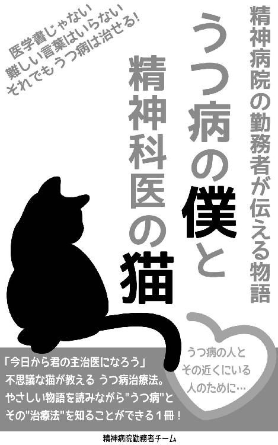
夢から覚めたとき。今までが夢だったのか、それとも現実だったのか、迷うことはないだろうか。
奇妙な夢を見た。夢の中の僕は、猫と共にいた。見たこともない黒い猫。でも懐かしい感じがした。不思議な感じがした。
「君は......だよ。......よりずっと」
知らない声。でもこの声は......。
僕はそこで目を開けた。
散らかった部屋。外は暗闇。窓から入る星明りが、静かに室内を照らす。
身体が芯から冷えているのを感じる。窓を開けたまま、うたた寝したことが原因だろう。でも今は、どうでも良い。何もする気が起きないから。
気だるい身体。動くことさえ億劫。
（......消えてしまいたい）
そんな風にも思う。しかし、同時に申し訳ない......。こんな風になってしまった自分が本当に申し訳......。
「申し訳ない......」
......誰かの声。僕の想いが言葉になったのか。でも、僕の喉は震えていない。
「申し訳ない......一つお願いがあるのだけど......水を頂けないかな」
視線の先には猫がいた。
汚い毛並み。痩せた身体。そして何故か少しだけ懐かしい。そんな黒い猫が、真っ直ぐ僕を見つめていた。
何をやっているのだろう。皿の水を美味しそうに飲む猫を見ながら考えていた。
窓が開いていたのが原因だ。そこに猫がいた。それだけだ。でも声が聞こえた気がした。恐らく幻聴。
僕の視線に気づいたのだろうか。黒い猫は顔を上げた。
「あまり見ないでほしいな。そうジロジロ見られちゃ水が不味くなる」
幻聴というのは面白い。おかしくなった脳が勝手に台詞を割り当てる。次はきっと魚が欲しいとでも言うに違いない。
「あとこの部屋は臭い。というか君が臭い。本当に水が不味くなる」
「し、失礼な幻聴......」
そう言ってからハッっとする。幻聴相手に会話を始めるなんて末期症状だ。誰かに見つかれば病院行きだろう。
ネットの噂しか知らないが、精神病院は恐ろしい場所だと聞く。できれば入院はしたくない。
「病院は行きたくないって顔だね。気持ちは分かる。ただ実際は君が思っているほど悪くない。ちょっと部屋代を追加で払えばホテル並みの個室だって取れる病院もある」
今度は幻聴に返事なんてしない。ただ気持ち悪いのは、幻聴にあわせて猫も口を動かしているところ。もしかして幻覚も加わっているのだろうか。
「若い人の場合、入院して短期集中治療をしたほうが早く治る。医師や、看護師、その他コメディカルの指導の下、規則正しい生活と服薬をすれば精神症状は二、三ヶ月で落ち着く」
コメディカル？ 医師と看護師は知っているけど......。
「あぁ、コメディカルというのは臨床心理士、作業療法士やＰＳＷ......医師以外に治療を支援する人たちのことだよ。ＰＳＷというのは精神保健福祉士と言って......」
僕は布団に入ることにした。
もう寝よう。ついに幻聴が僕自身の知らない単語まで言い出した。そのうち日本語だか英語だか分からない言語で喋りだすに違いない。迷い込んだ猫も、お腹が膨れればどこかへ行くだろう。一晩くらいなら窓は開けっ放しで構わない。
「ま、いいさ。ゆっくりおやすみ」
そう言う猫の声を背に、僕は夢の中に落ちた。
――――初めての都会。
そこは刺激に満ちた世界。街行く人々は皆輝いて見えたし、春の日差しは確かに僕を祝福していた。
引越しのダンボールを片付けた部屋は、思ったより広い。家賃の関係もあり綺麗なアパートではなかったが、それでも新生活を期待させるには十分な間取り。
可愛い彼女ができたら、そこのキッチンで何か作ってくれるのだろうか。そのときは僕も手伝おう。不器用だけど、ジャガイモの皮くらいきっと剥ける。
大学の構内では、先輩たちが必死に僕を勧誘した。自分たちのサークルに入らないかと。
新入生なら誰にでも声をかけるのは知っている。それでも僕はワクワクした。
広い講堂で受ける講義。勉強のほうは何とかなるだろう。こう見えても、地元の高校では成績上位者だ。頭が良い訳ではないが、一人黙々と勉強するのは苦ではない。
あとは友達かな。一緒に講義を受けたり、ご飯を食べたり。そうだな、合コンなんかもしてみたい。
そう思いながら日々過ごしていた。
入学から暫くの時間が流れる。まだ友達はできない。
もともと積極的なほうではなかったし、自分から声をかけるのも下手。だから知らない土地で毎日講義を受けるだけじゃ友達もできない。
このままじゃダメだ。よし、サークルに入ろう。同級生の友達もできるし、先輩とも仲良くなれる。そうすれば行動範囲もきっと広がる。
適当なサークルの説明会にいくつか参加した。先輩たちは皆、ニコニコしながら説明をしてくれる。
「今度飲み会をやるんだ。こんな説明会よりも、楽しく飲んで話して、皆を知って貰ったほうが良いからね。参加してみない？」
イエスの合図として、僕は首を縦に振った――――
「うぁぁっ！ はぁ、はぁ......」
布団を思いっきり蹴飛ばした。
いつもの夢だ。喉の奥から込みあがって来るものを感じる。
慌ててトイレに駆け込んだ。しゃがみこみ、便器に顔を傾ける。
もう......嫌だ。
嘔吐物と一緒に涙が出た。
二、三〇分は経ったのだろうか。ようやく落ち着いた僕は、トイレのドアを開ける。
「おはよう。辛い症状だね」
......まだいたのか。お腹が膨れればどこかへ行くと思ったのに。
「症状が深刻なのは察するが、風呂は入ったほうが良い。シャワーを浴びるだけでも良いから」
幻聴め......風呂なんて入る気がしないのに。
忠告を無視してゆらゆらと歩く。すると猫は、すぐさま進行方向に立ちふさがった。
「お願いだよ。シャワーを浴びるだけで良いから」
決して強い口調ではない。どちらかというと、穏やかで優しい口調。でも、意思は強く伝わる。小さく痩せこけた猫なのに、その瞳には力がある。
「わ、わかったよ......」
僕は仕方なくバスルームに向かった。
何日ぶりの風呂だったろうか。もちろんシャワーだけで済ませたけど、身体の汚れ以外も色々落とせた気がする。
温まり、気分も良くなった僕がバスルームの扉を開けると、そこには僕以上に上機嫌な猫が待っていた。
「お疲れ様！ 凄いじゃないか。これは大きな一歩だ！」
まさか幻聴に褒められるとは......でも嫌な気分じゃないな。先ほどは少し怖かった猫の瞳も、今は心なしか可愛く見える。
「ついでに雑務も済ませてしまおう」
風呂から出た僕は、猫に言われるまま新しい下着を着て、言われるまま衣類を洗濯機に突っ込んだ。
そして今、モーターが回る音をＢＧＭに、猫と向き合い幻聴を大人しく聞いている。
「こう見えても吾輩は紳士だ。だから水のお礼くらいはしよう」
「......はぁ」
「吾輩は猫である。名前はまだない」
「......」
「分かっている。ここで笑いが取れないことは分かっているよ。うん」
夏目漱石の有名な小説の書き出しだ。
僕の幻聴も凄いな。まだ、こんなくだらないユーモアを交えることができたなんて。もっと深刻な状態だと思っていたのに。
「君は今、幻聴が聞こえていると思っているだろう。それはそれで構わない。いや、むしろそう思っていてほしい。だから間違っても、僕は猫と話ができる、なんてことを口走ってはいけない」
「幻聴......」
そう呟きかけてから言葉を飲み込む。この声は本当に幻聴なのだろうか。
「世の中には、よく分からないことが沢山ある。猫の声が聞こえるのもその一つだ。ただ忘れないでほしい。幻聴だか猫の声だか知らないが、君は久しぶりに風呂に入り、洗濯機を回すことができた。これは物凄く大きな一歩だ」
「そんなの誰だって......」
「誰だって簡単にできること......そうかもしれない。でも、考えてほしい。例えば風邪で四〇度の熱がある人が、それを簡単にできるだろうか」
「無理だよ......」
「その通り。何らかの病気になっているときは、誰だって簡単にできることができない。でもそれは仕方がない。病気なのだから。むしろそこで頑張って風呂に入り洗濯機を回したら悪化するだろう。病気のときは休むのが一番だ」
「......」
「今の君も同じ。病気だよ。うつ病という名の」
薄々分かってはいた。
何もする気が起きないし、食欲もない。できるなら、この世から消えてしまいたい。
でも改めて幻聴に言われると、凄く変な気分になる。
「そんな状態なのに、今日は風呂に入って洗濯機を回せた。これは大きな一歩だ」
ボーっとする頭で、僕は猫の言葉を聞いていた。
「自己紹介が遅れたね。吾輩は猫である。名前はまだない。でも職業は精神科医。頂いた水のお礼に今日から君の主治医になろう。よろしく」
開いた口が塞がらない。
この日初めて、そんなことが本当にあるのだと知った。
「うつ病と言われても、そう落ち込む必要はないよ。日本人の約一五人に一人は経験するメジャーな病気だ。このような症状が現れる」
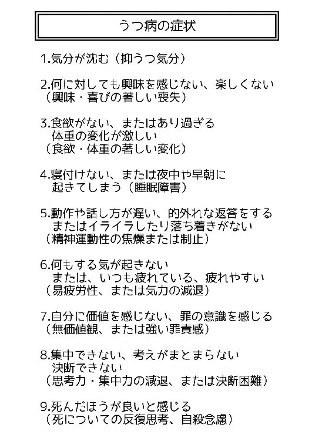
「この中から五つ以上あてはまり、症状が毎日のように二週間以上続く。さらに、抑うつ気分か、興味・喜びの著しい喪失のどちらか又は両方が当てはまる場合、うつ病と診断できる。また身体的にこのような症状が現れることもある」
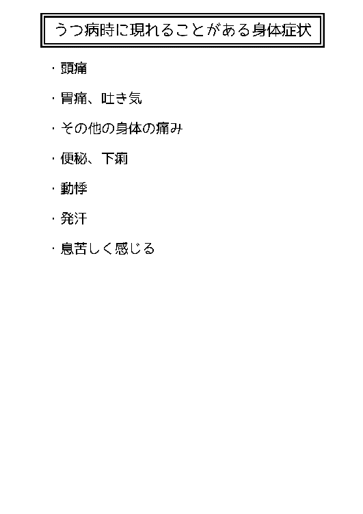
つらつらと喋る猫を前に、僕は目の前に霞が掛かっているような気分を味わっていた。
幻聴の割には良く喋る。そして全然頭に入ってこない。
「あ......すまない。吾輩としたことが......。とにかく、様々な辛い症状に見舞われてしまうのが、うつ病だ」
「様々な症状......」
「でも、もう心配は要らない。吾輩という優秀な医師が主治医になった。君が回復するのは時間の問題さ」
「......」
「では早速治療を始めよう。今日は一日もう何もしなくて良いよ。ゆっくりダラダラしてほしい」
「え......」
「それが治療だ。ただし食事はちゃんと取ってもらう。あと夜になったら寝る。朝起きたらまずカーテンを開けよう。しばらくはこれで良い」
「......」
「風邪になったとき、人間はどうする？ おかゆを食べ、薬を飲んで寝るだけじゃないかい？ でもこれが一番正しい」
猫は立ち上がり、そのまま部屋の隅まで歩く。
そこには積み重なった本があった。一番上の本は、二番目の本の上に半分ほど乗った形。つまり残りの半分は、足場もなく空中にあることになる。
「正常状態というのは、色々な要素が丁度良いバランスのときに成り立つ」
猫は一番上の本に前足をかけた。本が傾き落ちそうになる。
「もしバランスが崩れれば正常状態ではなくなり、放っておけば崩れ落ちる。でも逆に、元のバランスのとれた状態に戻ろうとする力も存在する」
猫はそういって前足を解いた。本の傾きは直り、元の状態に戻る。
「バランスというのは凄く大事。何事においてもね。ちなみに今日は何の日か知っているかい？」
「えっと......」
「今日は、九月二三日、秋分の日。春分の日と同様に、昼と夜の長さが同じになる日だ。バランスの話をするのに一番良い日だよ」
そういって猫は顎を少し上げた。
あぁ、これが猫のドヤ顔か。口には出さなかったが、僕はそう思っていた。
「ところで、バランスのとれた状態に戻ろうとする力とは何だろう？ 答えは、人の自己治癒能力だ。ちょっと失礼するよ」
「ん？ ......わっ！」
猫は僕に近寄ると、そのまま僕の手の甲を引っかいた。といっても、血が出るほどではない。軽くスジができる程度。驚きはしたが痛くはない。
「すまないね。今、君に全治一日程度の怪我を負わせた。さてこの傷、君の自己治癒能力が働けば明日には治るわけだよね？ その間に君の身体では何がおきていると思う？」
「それは......皮膚が元に戻って......」
「その通り。でも物理動作を起こすには何らかのエネルギーが必要だ。そのエネルギーは何だろう？」
「ごはん......？」
「正解、栄養だ。そして同時に、休息も必要。何かを修理するとき、修理対象は静止しているほうがやりやすい。自転車を走らせたままパンク修理する人はいないだろう？」
「それは......そうだけど」
「だから治療の基本動作は二つだけ。栄養を取ることと、休息を取ること」
「でもそれだけじゃ......」
「うつ病が特殊だから？ いいや、それは誤解だよ。うつ病も風邪も変わらない。風邪は身体の調子が悪いとき。精神病は脳の調子が悪いとき。たったそれだけ」
「うーん......」
「細かい話はまた今度するよ。今は忘れて、とにかく今日から暫くは、ある程度規則正しくダラダラすれば良い。その手の傷が治るように、脳の調子が少し良くなるまで」
僕は自分の手の甲を眺めた。うっすら見える白い傷。この傷が治るのと僕の憂鬱な気分が治るのは全然違うような気がする。
「それと、吾輩はただの猫ではない。こう見えても結構な名医だよ。だから今日からは、先生と呼ぶように」
「え......」
「リピート、アフターミー、センセイ！」
「......」
「リピート！ アフターミー、センセイ！ はい！」
「せ、せんせい......」
「よろしい」
「......」
この猫......いや、この先生、随分変な奴だ。
猫が話をするというのは、それだけで十分変。その上、自称精神科医。そしてわざわざ僕の主治医になるという。
でも嫌な気分じゃない。先生の声は聞いていても不思議と嫌な気分にならない。話し方というか発音というか、それがとても綺麗に自分の懐に落ちてくる。ただの優しい口調とは違う、ちょっと不思議な話し方。
「よし、今日の講義はここまでだ」
「え......あ、ありがとうございました」
「うん。では診察料を頂こう」
「えっ？」
「おかゆを作りたまえ。二人分の朝食だ。吾輩は少しで良いよ。あと濡れタオルで吾輩の身体を拭いて欲しい。君だけ風呂に入り、吾輩はそのままというのは、いささか不公平だと思うからね」
開いた口が塞がらない。本日二回目。またしてもドヤ顔をするこの不思議な先生を見ながら、僕は唸る洗濯機の音を大人しく聞いていた。
一緒に食事を取り、身体を拭いてやると、あとはゆっくり休みたまえと言い残して先生は行ってしまった。ちなみに帰ってきたら窓を叩くから、僕はすぐに開けなければならないらしい。
のんびりと天井を眺める。
いつもと変わらない天井。いつもと変わらない部屋。でも、今日はいつもとちょっとだけ違う。朝ちゃんと起き、風呂に入り朝食を食べた。当たり前のこと。それが今日はできた。
「お疲れ様！ 凄いじゃないか。これは大きな一歩だ！」
先生の言葉が頭の中で蘇る。あのとき、僕は嬉しかった。
誰だって簡単にできること。それが最近の僕にはできなかった。それが今日、久しぶりにできた。そして先生に褒められた。
あの猫が本物の先生かどうかは分からない。でも嬉しかった。
だから僕は、先生の言いつけを守り、今日は一日ゆっくりダラダラ過ごした。昼も朝と同様のおかゆを作り、一人で食べた。
もちろん途中で何度か嫌な気分に襲われたし、暗い気持ちにもなった。でも、昨日よりは少しだけマシだった。あのときの嬉しそうな先生が、僕を少しだけ励ました。
日が落ちると先生が帰ってくる。
僕の顔を見ると、今日はどうだった？ と、一言だけ聞いたから、僕は、ゆっくりダラダラしていたことを伝えた。
先生はそれを聞き、満足そうな顔をすると、そのまま上を見上げる。
洗濯機から出し忘れていた洗濯物。先生が帰るちょっと前に気づき、慌てて取り出して部屋干ししたもの。
外に干していなかったこと......怒られるかな。
少しだけそんな不安に駆られていると、先生は想像と全く逆の態度をとった。
「凄いじゃないか。洗濯物までちゃんと干せている！」
普通の人なら馬鹿にされていると感じる言葉だろう。でも今の僕は嬉しかった。
多分、先生の不思議な口調と、どこか安心できる表情のお陰。
こうして、僕の精神科受診の初日は、ゆるやかに幕を閉じた。
それから数日。僕と先生の生活に大きな変化はない。
朝は先生に起こされ、カーテンを開ける。朝食を食べ、ゆっくりダラダラする。先生は出かけることが多かったが、基本は僕の部屋で寝食を共にしていた。
夜は先生と少しだけ話す。といっても、僕が色々できていることを先生が一人で喜ぶ。ただそれだけ。眠ればまた次の日が来る。
途中、食料がなくなったので先生と一緒に買出しに出かけた。
僕が人と会いたくないのを察してか、人通りが少ない時間帯に、混雑しない店での買い物。もちろん、外では先生と会話はしない。それは先生から禁じられていた。
また猫なので店に入ることもできない。先生は外で待ち、僕が買い物をする。店を出ると先生が嬉しそうな顔をする。そんな流れ。
最近、何故か失敗が多くなっていた僕は、買うものを間違えたりもしたのだが、先生はそれを咎めることはせず、無事買い物を終えたことを喜んでいた。
ちなみに先生は、僕のアパートの周りの地理に詳しかった。昼間この辺りを散歩しているからだと言っていた。
何日位そうしていたかはよく分からない。ただ、日を重ねるごとに、僕の暗い気持ちは少しだけ和らいでいるような気がしていた。
ある日の夕暮れ。
音が聞こえたので、僕はいつも通り窓を開ける。先生はそこをスルリと抜けて中に入る。
昨日と変わらない。でもちょっとだけ違った。先生が、小さな小さなため息をついたのだ。それは、誰もが見逃してしまいそうなほど小さなもの。
「先生......疲れている？」
思わず聞いてしまった僕を見て、一瞬だけ驚いた表情をする。でもすぐに元の顔に戻り、そして僕に返した。
「大丈夫。大丈夫だよ」
そのとき、僕の頭は少しだけ回転した。
昼間この辺りを散歩している。あの言葉は本当なのだろうか。ただの散歩でこんなにも疲れるのだろうか。
「......よし。今日は早めに寝よう。明日からは新しいステップに移るよ」
先生は、小さな手で僕をポンポンと叩いてから、そのまま部屋の隅にあるクッションに包まり、そして間もなく寝息を立て始めた。
不思議な先生だ。でもお陰で僕は変わりつつあるような気がする。それならそれで、先生が外で何をしていようが良いじゃないか。
「先生。明日からもよろしくお願いします」
僕は先生に聞こえないよう、小さく小さく呟いた。
「うつ病のときには、気持ちの悪循環が起きてしまう」
朝食を終え、部屋を少し片付けてから、先生の講義が始まった。
「正常状態というのは、色々な要素が丁度良いバランスのときに成り立つと教えたよね。これが崩れたとき、元に戻ろうとする力が働く。ただ、うつ病の場合は、それとは逆の力も発生する。今から言うとおりに図を描いて欲しい」
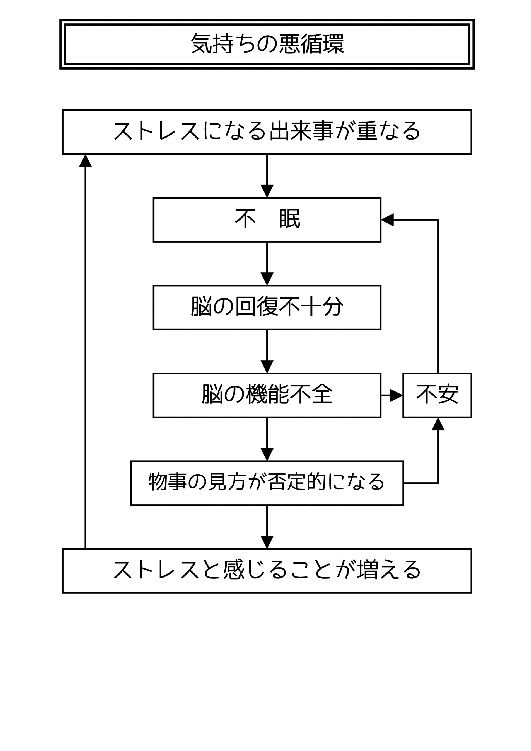
「矢印を見ると分かるとおり、気持ちの悪循環では悪いことが悪いことを呼び、階段を転げ落ちるように悪化する。ポイントは不眠。治療に重要な睡眠が十分に取れないところ。不眠は眠る時間になっても脳が興奮状態にあることが原因だ。今度はこれを説明しよう。今、君はペンを持っているよね」
「これ？」
「そうだよ。君はペンを回すことができるかい？」
先生に言われ、僕はペンをクルッと回す。
「そのまま暫く連続で回し続けて欲しい」
そう言われ、僕はクルクルと回し始めた。
中学の頃、ペン回しは何故か格好良いと思いこみ、必死に練習した。高校以降は逆に恥ずかしいと思い封印していたが、どうやら指はまだ覚えているようだ。
「人間には様々な神経があり、様々な役目を持っている。そして各神経が正しく機能しないと人間は正常動作しない」
「正常動作......」
「そう。うつ病は人間の脳が正常動作していない状態だからね。うつ病の原因の多くは、何らかのストレス。そしてストレスが多い状況では、交感神経、副交感神経の働きが乱れる。今君は、ペンを回しているよね？」
「そうだけど......」
「そのペンを人間だとしよう。ペンを回す君は交換神経だ。交感神経が働くと人間の脳と身体が活発的になる。主に昼間働く神経だ。では回転を止めてほしい」
僕が回すのを止めると、当然ペンは静止した。
「今の君は副交感神経。副交感神経が働くと脳も身体もリラックスする。主に夜間働く。これらの神経は自動的に働くので自律神経と呼ばれている。まとめると、それぞれの神経が働いた結果、身体はこのようになる」
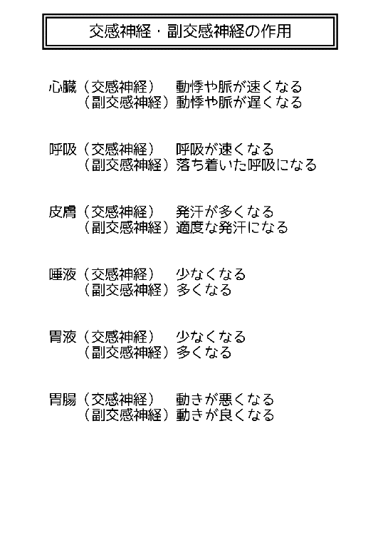
「ここで交感神経に注目してほしい。筋肉系は活発になるが、内臓系は逆に動きが衰える。唾液や胃液も減る。これは何故だろう」
......そう言われればそうだ。活発にする神経なら、全部活発化しても良いのに。
「答えは交感神経が闘争と逃走の神経だから。一目散に逃げなきゃならないときは食べ物を消化するのは後回しになる。他にも神経が逃げることに特化すると、このような症状が現れる」
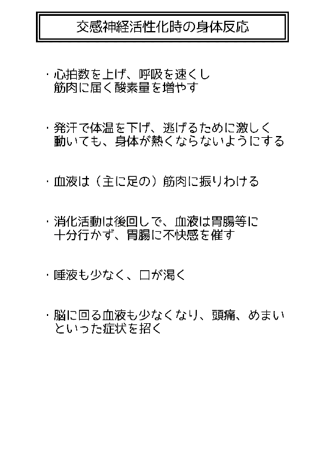
そこまで説明すると、先生は少しだけ怖い顔で僕を見た。
「ストレスが増えると交感神経が騒ぎ出す。一刻も早く、ストレスという命に関わる脅威から逃げるために」
「命に関わるって......」
「大げさだと思うかもしれないが事実。でも、ここは大事な部分だから後で話すよ。さて次は副交感神経。別名、休息の神経。そして、交感神経とはシーソーの関係にある。そのペンと、机の上ある消しゴムでシーソーを作って欲しい」
僕は言われるまま、ペンと消しゴムのシーソーを作った。と、言っても、消しゴムの上にペンを置いただけの代物。すると先生がシーソーを動かすよう合図する。僕は、それに合わせてシーソーを揺らす。
左側が上がると右側が下がる。
右側が上がると左側が下がる。
「そのシーソー、左に交感神経、右に副交感神経が乗っているとしよう。交感神経が上がると副交感神経が下がる。逆も然り。下がっているとき、その神経は休んでいる。これにより各神経は活動すべきときにしっかり活動し、休むときはしっかり休むことができる。ところがストレスが増え、交感神経が頻繁に騒ぎ出すと、こんな動きになる」
また先生が動きを指示する。左の交感神経が上がったまま、中々下ろさせてくれない。やっと下に指示が出たと思ったら、またすぐに上げさせられた。
「これは休息の神経である副交感神経が十分活動できない状態。よって人間の脳と身体は十分休めない。つまり脳の回復は不十分となり、それが脳の機能不全を起こす。この状態がずっと続いたらどうなるだろう」
「......あっ」
「君も気づいたようだね。ここで病気が始まる。ストレス過多でも交感神経が元気なうちは良い。脳と身体は活発に動いてくれる。でも、副交感神経が正常に動かない以上、休息がとれず、いつかはエネルギー切れになる。そうすればもう交感神経も元気が出ない」
ずっと上にいた左の交感神経が、ゆっくり落ちてきた。
「右の副交感神経は、長い間地面で眠らされていた。だから今、交感神経が大人しくなって出番が回ってきたと言われても、すぐに正常動作することは難しい。さらに交感神経がエネルギーを独り占めしていたから、副交感神経が元気に動くためのエネルギーもない。そうなると、もうシーソーとして機能しない」
先生の指示。僕はそれを受けて、ペンを消しゴムの上から外して置いた。
机の上に静かに横たわるペンは、まるで死んでいるかのように見える。
「うつ病治療で大事なのは栄養と休息。それは、ぐったり疲れてしまった二つの神経たちを元に戻すためにも必要。もう一度、先ほどの図を見て欲しい。脳の回復不十分に対して、もし十分な栄養と休息が取れたらどうなるだろう」
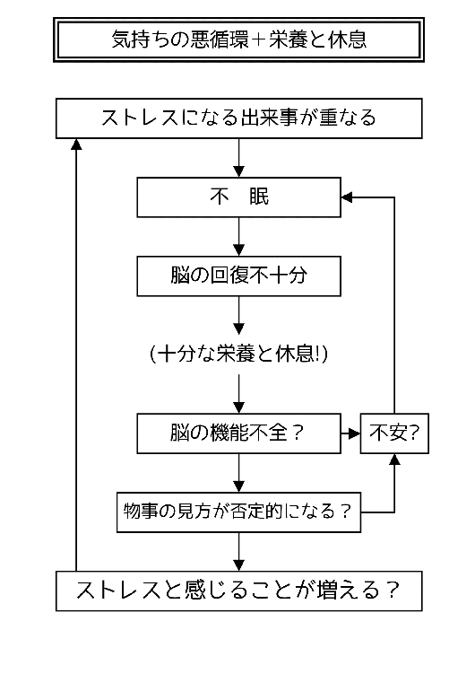
「脳の機能不全以降に？が付いたよね。こうなれば負のスパイラルは軽減される。繰り返すけど治療で大事なのは栄養と休息。風邪だろうがうつ病だろうが、基本は変わらない。入院治療では、まずこの基本をしっかり行うため、ストレスのない環境で規則正しく日々ダラダラ過ごし、栄養をとり、睡眠をとる。もちろん薬も併用して」
「入院......」
「この時代では一番早くて簡単な病気の治療手段さ。ただ必ずしも入院が必要なわけじゃないよ。事実君は、ここ暫くの間、吾輩の指導の下で正しく栄養を取り、しっかり休息をとった。ちゃんと眠れなかった日もあったけどね」
そう言われ思い出した。
夜寝る一時間前には風呂に入れとか、それ以降はテレビや携帯は触るなとか、昼寝はしても良いけど短時間にしろとか、今思い出せば色々細かいことを言われていた。でも多分、それらも質の良い睡眠をとるための指導だったのだろう。
「脳の機能不全についても少しだけ説明しよう。うつ病気のときは特定の神経伝達物質のバランスが悪くなる。主な神経伝達物質の役割を説明しよう」
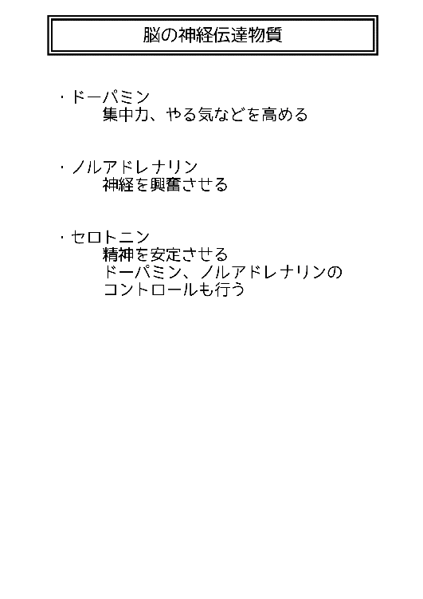
「うつ病の場合、精神を安定させるセロトニンが不足する。これは過度なストレスや生活習慣の乱れが原因。もちろん食生活の乱れも。吾輩との買い物を思い出してごらん」
買い物......あのとき先生は、僕に何を買えば良いかまで細かく指示をした。料理自体がストレスになることを避けるため、できるだけ簡単に調理できて、かつ、色々な食材をバランスよく食べられるような内容だったと思う。
「セロトニンはトリプトファンという必須アミノ酸から作られるが、この必須アミノ酸は食事から摂取するしかない。これは肉、魚、豆、種子、ナッツ、豆乳、乳製品などに沢山含まれている」
「色々食べれば良いということ？」
「ほぼ正解かな。ご飯を主食に、主菜、副菜とバランスよく色々食べるのが理想。栄養素はお互いに助け合って力を発揮するからね。あと必要なのは正しい生活リズム。朝起きて光にあたり、適度に疲れて夜眠ること。光にあたらない生活はセロトニンを減らすという研究もある」
「毎朝カーテンをあけて光を浴びるのが大切ってことか」
「そうだね。ただ、うつ病の原因は他にもあり、かつ、現段階では正確に分かっていない部分もある。だから一旦ここまでにするよ。繰り返すけど治療の基本は栄養と休息。まずはそれだけで良い。次回は応用。交感神経が正しい動きを取り戻すための方法を教えよう。あとストレスの話も。お疲れ様」
講義後、先生は水を少し飲んでから、そのまま自分の寝床で横になっていた。
話し続けて疲れたのだろう。聞いているだけの僕も少し疲れたし。
その後、先生と一緒に昼食をとり、午後はまたいつも通りダラダラする。
何気なく窓の外を見ると、小さな鳥が電線にとまっていた。それを見て、僕は思い出す。
実は昨日まで、こうして家の中にいることに罪悪感を覚えていた。でも今日の講義で、僕の認識は少し変わった。このダラダラ自体が入院と同じような治療の一環だと聞いたから。
「こんなことなら、もっと早く教えてくれれば良かったのに」
そう呟いてから気づく。
先生と出会った頃の僕では、こんなにも色々と思考を巡らせることができなかった筈だ。あの頃、僕の頭にはいつも霞が掛かっていた。窓の外を眺めても、その先にいる小鳥にさえ気づかないほどに。でも先生から規則正しくダラダラ過ごすことを強制され、栄養と休息をとった結果、霞は少しだけ晴れてきた。だから今はこうして考え事もできる。
先生は先ほど散歩に行くと出かけてしまった。
僕は今、主不在の寝床を眺めている。
「先生は......全部分かっていたのかな」
いつか元気になったら色々聞いてみよう。
少し薄くなった霞の合間から、いつもと変わらない景色を眺めながらそう思った。
――――「今度飲み会をやるんだ。こんな説明会よりも、楽しく飲んで話して、皆を知って貰ったほうが良いからね。参加してみない？」
イエスの合図として、僕は首を縦に振った。
飲み会......大人の響きだ。ファーストフード店でもファミレスでもない。と言っても、ファーストフード店で遅くまで駄弁っていた記憶もないが、それにしてもワンランク上の響き。
期待に胸を膨らませたまま何日か過ぎた。そして当日を迎える。
「かんぱーい！」
大きな声と共に、その飲み会は始まった。
居酒屋って始めて入るけど、なんだか賑やかで楽しそうだ。ウーロン茶をチビチビ飲みながら辺りを伺っていた僕は、ふいに先輩から話しかけられる。
「なに飲んでるのー」
うわ、酒臭い。始まったばかりなのに。
「あー、ごめんねー、こいつ今日休みでさ、ここ来る前から飲んでいたから」
「そ、そうなんですね......」
「俺だけ悪者あつかいかぁー？ ひでーなー」
二人組みの先輩は、しばらく僕の席の近くで飲んでいたが、いつの間にか酔っ払いだけ残し、もう一人は行ってしまった。
「おねーさーん、おかわり！」
「......」
「ちょっとお前、暗い！ もっと元気にいこう！」
「あ、はい......」
「つか飲んでる？ え......コレ？ コレじゃだめだよー。はい、コッチね」
「え、でも僕......」
「いーのいーの！ ほら、まわり見てみ。みんな楽しそうじゃん？ 全部コレのおかげよ。はい、じゃ、いってみよう！」
陽気な先輩に乗せられて、僕はグラスに口をつけた。
しばらくすると僕もなんだか楽しくなってくる。なるほど、皆が楽しそうなのは、やはりコレのおかげなのか。
「おー、良いねー、良い飲みっぷり！」
先輩に褒められて、なんだか自分が凄い気がしてきた。今まで飲んだこと無かったけど、意外といける口なのかもしれない。
......そう、このときまでは良かった。いや、ここで止めて置けば良かった。
飲み会も中盤。飲んでいるうちに、だんだん自分が大きくなっていくのを感じる。普段大人しい僕も、こういう席ならなんとかなるかもしれない。そんな風に思っていた矢先、それは突然来た。
「うっぷ」
「お？ お？ どうした？」
「あ、いや、なんでも、う、うっ！」
「！」
......吐いた。
飲み会の真ん中で。こんな風に吐くなんて初めてだ。
賑わっていた場が、一瞬で静まり返る。立ち込める異臭。自分のものだ。それを嗅いだ途端、もう一度......。
涙まで出ていた。なんでこんな......こんな......。皆、僕を見ている......。
「あー、店員さんすみませーん、雑巾とお絞りおねがいしまーす。大丈夫か？」
返事をする元気もなかった。ふらふらで謝ることもできなかった。
その後、僕は先輩たちに連れられ外に出る。
しばらくして何とか歩けるようになると、タクシーで帰ることになった。先輩が送ってくれると言っていたが、それ以上惨めな気分になりたくない僕は、その申し出を断った。
翌日は頭痛が酷かったので学校は欠席。そして翌々日、いつも通り学校へ向かう。
講堂に入ると、僕が入った瞬間、皆のザワつきが止まった気がした。僕を見て目をそらす人。あの飲み会で見かけた顔も何人かいる。
気のせい......気のせい......。自分にそう言い聞かせながら、隅のほうの席に座る。それからは黒板と机の上だけに集中した。
講義が始まる。教授の声が聞こえる。でも後ろのほうでは、小声で話している人もいる。携帯を触っている人もいる。
ふいに声が聞こえた気がした。
「あいつだぜ......」
気のせい......気のせい......講義に集中しなきゃ......。
それからの僕は、家と学校の行き帰りだけを繰り返した。
学校ではひたすら勉強に集中。でも集中すればするほど周囲の声が聞こえる。普通にペンを持っているだけなのに、なぜか手が震えだすこともあった。その上、講義の中身はさっぱり頭に入らない。時間が進むにつれ難しい課題やレポートもいくつか出るようになる。
......解けない。
......分からない。
でも提出期限は迫ってくる。
高校まで、こんなことは無かった。皆が頭を抱える難しい問題も、僕には解くことができていた。
食堂では皆が楽しそうに、そのレポートを書いている。
一人じゃなく、皆でやれば簡単なのだろうか。こんなにも難しいのに......。
笑いながらできる課題なのだろうか。こんなにも分からないのに......。
もしかして......。分からないのは僕だけなのだろうか。僕だけが頭が悪いのだろうか。
もちろんテストの結果は最悪。ずっとそれが続いた。
次第に、学校に行くだけで体調が悪くなるようになる。吐き気がする、頭が痛い。講義に出られなくなる。すると、もっと解けなくなる。それが続いた。そして、もう......。
気づけば僕は、浴室で剃刀を見つめていた――――
嫌な夢。
全身、汗でびっしょりだ。とても気持ち悪い。
「......」
僕の枕元には先生がいた。先生の眼差しの中には、不安そうな僕がいた。
「先生......」
「喋らなくて良いよ」
「いえ......」
「......」
「......喋らせてください」
「......」
「お願いします......」
「わかった。ゆっくりで良いから。無理をしないで」
「はい......」
僕はその日、先生に全てを伝えた。
優秀だった高校時代。ドン底に落ちた日。それからの日々......。
先生は、それを真摯に聞いてくれた。いくつか質問もされ、僕は答えた。
子供の頃の話。僕の親の話。言い難い話もあった。話していて気分が悪くなることもあった。でも先生の目は、全てを受け入れてくれる感じがした。だから僕は、全てを話すことができた。
「ありがとう。話してくれて」
違うよ......その言葉は、僕から発するべき言葉だ。全てを聞いてくれて。僕の苦しい気持ちを聞いてくれて。
でも、それが言えなかった。僕は......泣いていたから。
理由なんて分からない。でも泣いていた。僕は、ありがとうすら言えない。そんな自分が......。
「申し訳ないと思う必要はないよ」
僕が思う前に先生が言った。
「そして約束して欲しい。もう決して、消えてしまいたいなんて思わないことを」
「......」
「あの日、君は吾輩に水をくれた。あの水が無かったら吾輩は死んでいた。命の恩人だ。そんな恩人が消えてしまったら、これ以上悲しいことはない。だから約束して欲しい」
「......」
「......吾輩のためにも」
「......はい」
「ありがとう。そう言ってもらえて嬉しいよ」
先生は猫だ。でも精神科医だ。今日、心からそう思った。
外科医は傷を治す。
内科医は病を治す。
でも先生は心を治す。
......それは違うよ、心ではなく脳だ。
先生ならそう言うに違いない。でも脳という身体の一器官ではなく、もっとよく見えないもの。心というものを治す。それが精神科医なのだと思った。
その日の講義は無し。講義の再開は、暫くゆっくり過ごし、僕の調子が良くなってからだった。
「前回のおさらいからはじめよう。まずは気持ちの悪循環」
「不眠 → 脳の回復不十分 → 機能不全のコンビネーションは、交感神経と副交感神経が正しく機能しないことも関係する。二つの神経の役割もおさらいしよう」
「そもそも交感神経は、ストレスという命に関わる脅威から逃げるために働く神経。以前君に、全治一日の怪我を負わせたときのことを思い出して欲しい。吾輩が君を引っ掻いたとき、君はどう動いた？」
「えっと、びっくりして......」
「慌てて手を引っ込めたよね？ あれは脊髄反射。熱い物を触ったとき自動的に手を離す動作と同じ、命に関わる脅威から一刻も早く逃げるための自動動作だ」
「命に関わるわけでもないのに......」
「そうだね。脊髄反射は刺激に対し、それが本当に命に関わる刺激なのかは考慮せずに、回避行動を始めてしまう。だって本当に命に関わる一大事なら、考えている間に致命傷になってしまう可能性もあるから。このため情報は脳に到達せず、背骨にある脊髄が回避動作を指示している」
脊髄反射に関しては昔習った気がする。一般的にもよく知られた言葉だ。
「でも交感神経、副交感神経の動きは脊髄反射ほど過敏じゃない。情報もちゃんと脳まで届く。ただし、同じような経験を繰り返すうちに反応は過敏になる。パブロフの犬の話は知っているかい？」
「犬に餌を与える前に毎回メトロノームを聞かせたら、メトロノームの音を聞いただけで犬は涎がでるようになった......だよね？」
「その通り！ 脊髄反射は訓練や経験なんて関係ない無条件反射。パブロフの犬は訓練や経験によって覚える条件反射。交感神経、副交感神経の動きは後者に近い。気持ちの悪循環を何度も繰り返していると、ストレスは何度もやってくるし、脳はどんどん弱ってくる。すると脳が間違った動きを覚えてしまう。間違った動きをもう少し説明するよ」
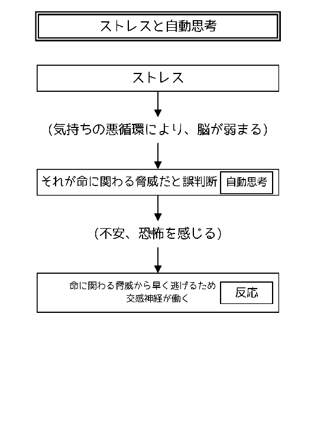
「ストレスに対する判断、これを自動思考と呼ぶ。これが誤ると、小さなストレスも命に関わる危機と判断してしまい、交感神経が激しく動き出す。筋肉や呼吸器系を活発化させ、脳や消化器系は見捨てる。そして度が過ぎると、その後疲れて病気になってしまう。適度に働けば最高の神経なのだけど」
「最高？」
「そう。交感神経だけでなくストレスもね。適度なストレスは適度な緊張を生み、適度に交感神経が働き、身体も活発に動く。その後、交感神経の活動が収まり、ちゃんと休むことができれば完璧。でも気持ちの悪循環で、それができなくなるのが問題」
「全ては悪循環が影響......」
「うん。図を合わせてもう一度見てみよう」
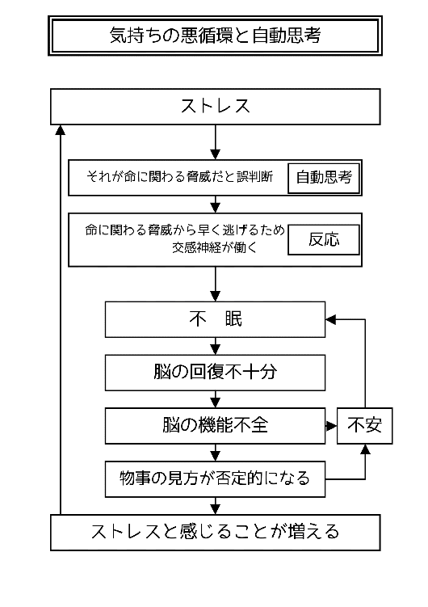
「自動思考は毎回、誤判断を繰り返す。これじゃ誤判断する癖がついても不思議はない。ちなみにこの悪い癖を直すにはどうすれば良いと思う？」
「うーん......」
「スポーツと同じだよ。何度も練習して良い癖を付け直す。それが治療になる」
「薬とかは飲まなくても良いの？」
「もちろん薬は重要。ただ、うつ病には何度も練習して良い癖を付け直す方法......認知行動療法と呼ばれる治療方法を薬と併用するのが有効だ」
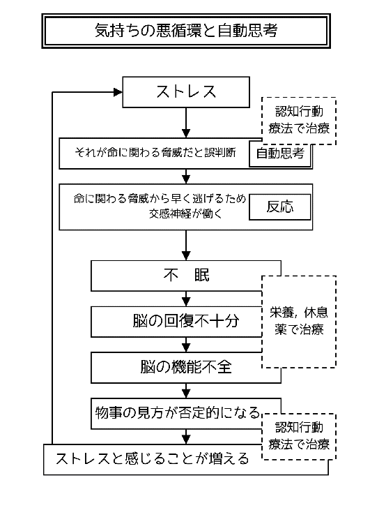
「認知......行動療法」
「難しい名前だけど、中身は実に簡単。まず認知。これは誤判断している自動思考の中身を明確にして、正しい判断は本来どうあるべきか確認すること。次に行動。何度も練習して良い癖を付け直すってことだね」
「確認と練習が治療？」
「そうだよ。ただしこの治療は、脳が弱りきった状態ではできない。栄養と休息を十分に取り、ある程度うつ病が落ち着いてから開始する治療法だ。どんなスポーツでも、上手くなるには練習を繰り返すことが必要だけど、過度の筋肉疲労中に練習はしないよね」
「それはそうだけど......病気は薬を飲んで治すものじゃないの？」
「確かに薬は大事。でも薬を飲まなきゃ治らない訳じゃない。薬は治癒のサポートをするだけ。怪我や骨折したときを考えてごらん？ こんな流れじゃないかい？」
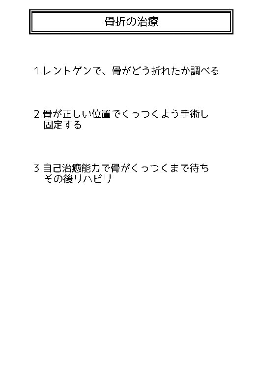
「この考え方を脳の病気......すなわち精神病にもあてはめる」
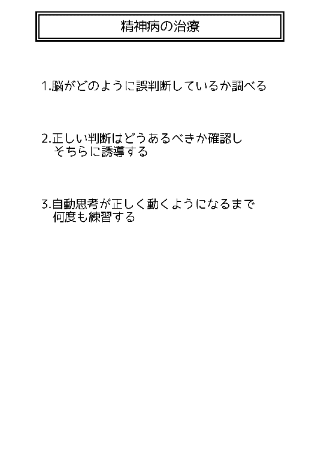
先生はペンを握れないので、書いているのは僕だ。そして今、自分で書いた箇条書きを見つめている。
精神病を怪我や骨折と比べたことは今まで無かった。そもそも全く別物と思っていたから。
「病状が今どうなっているか、目で見て確認することは重要だ。骨折の場合はレントゲンという専用の医療機器で状況を調べる。もちろんお金も掛かる。では、精神病で脳がどのように誤判断しているか調べるには、どういった機器を使うのか。答えは今、君の手の中にある」
「え......これ？」
「そう。今、君が持っている魔法のペンと紙だ！」
先生は肉球のついた手で僕のペンを指差し、得意そうに宣言した。
僕は若干反応に困ったので、ペンを一回クルっと回した。
「あ、そうじゃない。それでペンがキラキラ光りだして、君が魔法少女に変身することはないから安心して欲しい」
「......」
「ごほん......話を戻そう。認知行動療法は臨床の場......つまり病院とかでも行われている歴とした治療法でもある。そしてこれはペンと紙と指導者さえいればできる」
「お医者さんが指導しなきゃいけないってこと？」
「そうだね。病院では認知行動療法に習熟した医師が行うのが約束事になっている。君の場合は吾輩がいるから安心して良いよ」
「う、うん」
「......さて、今日はここまでにしよう。書いたことをもう一度見直して、あとはダラダラ過ごそう。あ、その前に水を貰えるとありがたい」
僕はキッチンまで行き、今や先生専用となっている皿に水を入れる。部屋に戻ると、先生は自分の寝床でスヤスヤと寝息を立てていた。
水が欲しいと言ったくせに......。
ちょっと納得はできなかったが、起こすのも悪いので、僕は眠る先生の前に水を置き、ノートを見直した。
病院に行き、血を抜かれ、色々機械をつけて検査をする。病名を告げられ、薬を貰い、注射や点滴をうつ。これが治療だと思っていた。でも、そうじゃない治療もあると今日聞いた。
もう一度、ペンをクルっと回す。もちろんペンが光りだすことも、魔法が発動することもない。
「ペンと紙しか使わない治療......か」
暫くそのまま、ボーっと自分のメモを見つめていた。
どうやら少しぼんやりしすぎたらしい。振り返ると皿の水は半分無くなり、先生の姿はもう、そこには無かった。
「昨日は認知行動療法の概要を説明したけど、今日からは実戦。手と頭を動かそう。まずは前回書いた図を、ちょっとだけ変えてみるよ」
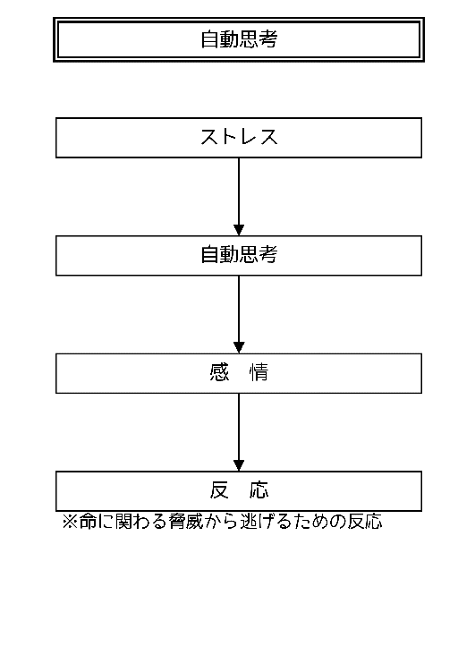
「実は自動思考と反応の間には感情がある。もっとも、自動思考と同様に自動で働くので普段は意識しない。でも、こうした意識しない部分を明確にすることが、認知行動療法の第一歩だ。具体的な例を入れてみよう。些細なストレス......そうだね、ある中学生が朝礼でスピーチをすることになった！ という想定でいこうか」
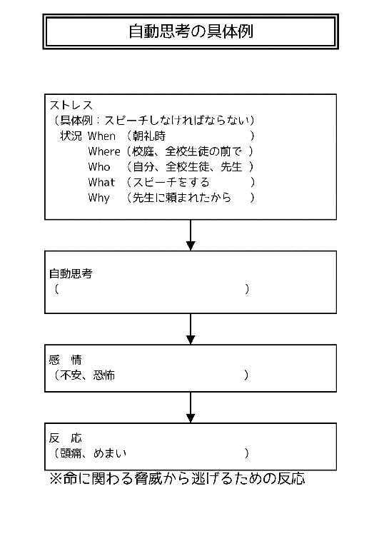
「ストレスの部分は具体的状況も書けるようにしてある。自動思考はあえて空欄、それよりまず他のところを見て欲しい」
「うん」
「スピーチを頼まれると、失敗したらどうしようと不安になったり恐怖が生まれたりする。これは誰にだって少しはあるよね。でもその後の反応はどうだろう」
「毎回必ず頭痛、めまいは起きないかも」
「そうだね。感情は理解できるが、反応はオーバーだ。でも実際こういった症状も起きることがある。命に関わる脅威から早く逃げたいと、交感神経が暴走するから。以前書いた交感神経が引き起こす症状をもう一度見てみよう」
「交感神経がオーバーな反応を引き起こしているとき、自動思考は何を考えているのだろう。きっとこんな感じじゃないかな」
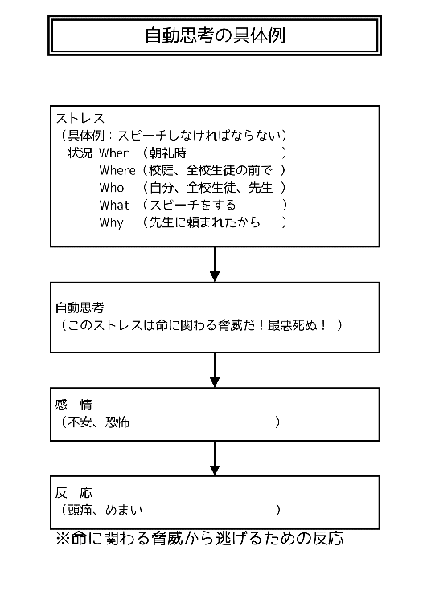
「極端に見えるけど、反応から推するとこのくらいのことを考えていても不思議ではない。さて、具体例が埋まったところで、もう少しこの図に手を入れるよ。今度は各々の感情に〇から一〇〇％の数字を付け、その感情がどの位の大きさか表そう」
「感情の大きさ......考えたこともなかった」
「普通はしないよね。でも感情の数値化は重要だ。だから何とか付けてみよう。例えば、怒りという感情の数値化は、このように表すことができる」
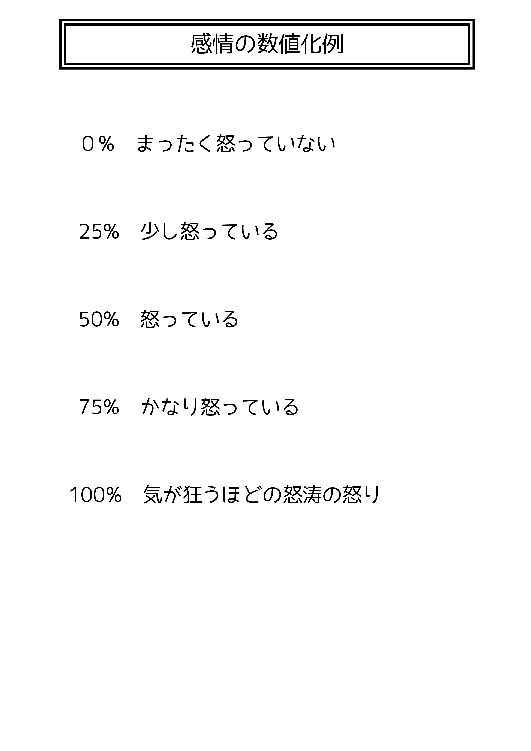
「話をスピーチの例に戻そう。感情を数値化する」
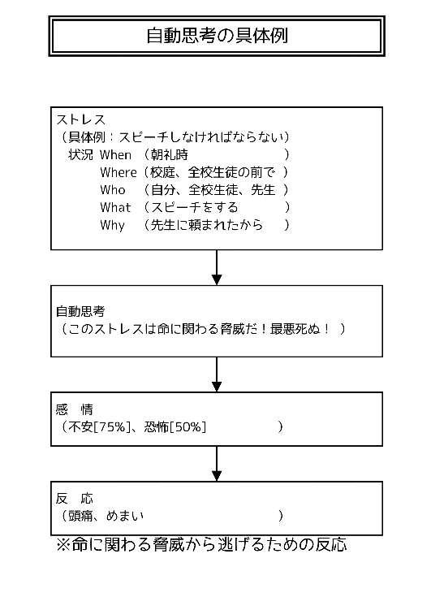
「これで自動思考の明確化は一旦完了だよ。あと感情を表す単語例もあげよう。ただし、これは迷ったとき用で、基本は自分の言葉で書けば良い」
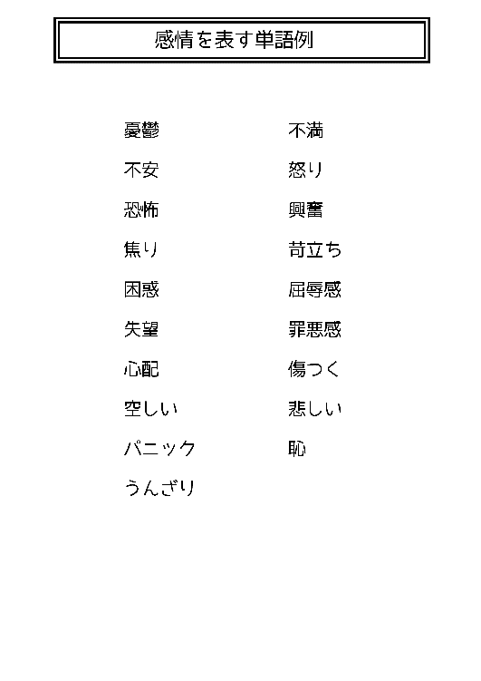
「この後、何か気になる出来事があれば、それに対して自動思考の明確化をやってみよう。吾輩も手伝うから」
「うん......」
僕はテンプレートを眺め、少し考え込んだ。
思考を書き出したことは今までない。でもこれが病院でも使われている治療方法の一部だと言われると試したくなる。先生も手伝ってくれると言っているし......。
「あ、ちょっと待った。一つ言い忘れていたよ。自分で作るときは真剣に考え込み過ぎてはいけない。あと気分が悪くなるようなら一旦やめる。ゲーム感覚で若干冗談まじりくらいが丁度良い」
「そっちのほうが難しい気がする」
「最初は皆そうだよ。でもすぐ慣れる。そして、明日は自動思考を変える方法も教える。それも最初は難しいけど徐々にできるようになる。吾輩に言わせれば、綺麗なフォームでバットを振るよりずっと簡単さ」
先生は一瞬だけ両前足を宙に上げた。
恐らくバットを振る仕草をしたかったのだろう。しかし願いは叶わず前足は重力に負け、すぐに四本足で着地することになる。先生は地に着いた足をしばらく見つめてから、そのまま少しマヌケな顔で僕を見上げた。
「確かに......先生には、認知行動療法のほうが簡単そうだ」
この日僕は、久しぶりに笑った。
「今日からは自動思考を変えていくよ。昨日、君が作った自動思考の具体例を見てみよう。まずストレスと反応を書き、次にそのときの感情を書いた。こんな風に」
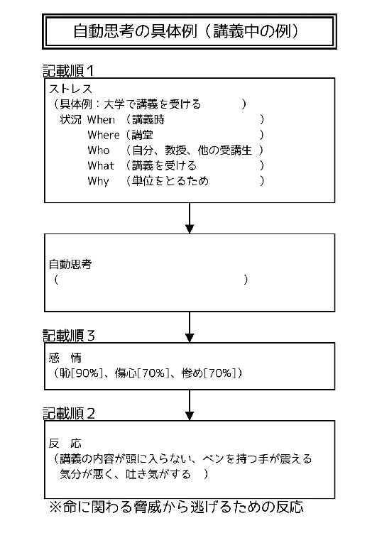
「ストレス→反応→感情の順に書くことが大事。ここまでは事実を書き出すだけだから、比較的簡単だけど問題は次の自動思考。命に関わる脅威と判断した理由の推測だ」
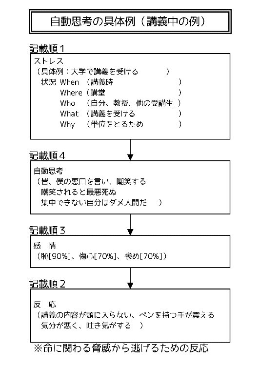
昨日、これを書いたのは僕だ。この内容を書くのには抵抗があった。でも書かなければならないと思った。だから先生にも手伝ってもらい、ゆっくり書き出したもの。今見ても色々思い出してしまい、若干気分が悪くなる。
「......君は本当によく書き出したと思う。この内容を書き出せたこと自体、大きな前進だ。だからこの自動思考の問題を解決しよう。大丈夫。何度も言うが吾輩は名医だ」
「うん」
「では、この書式を見て欲しい」
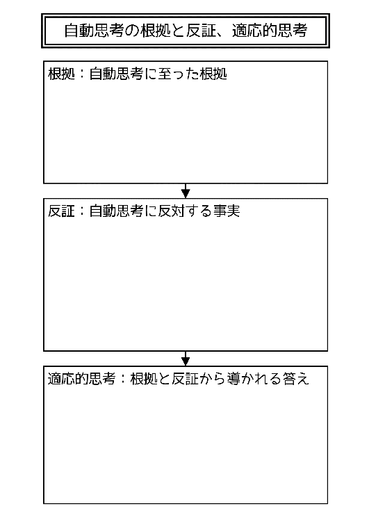
「根拠と反証？」
「そうだよ。根拠は自動思考の擁護派。反証は反対派。根拠○○がある、しかし反証○○という事実もある。といった形で表現できる」
「自分で擁護して自分で反論するのか......」
「今、君は討論番組に出演している。ただ今回、予算が少なかったので擁護派も反対派も一人でやらなければならない。ギャラは最低でも五割増しで貰わなきゃ。そんな感じだね。では擁護派の根拠から話そう。ここには自動思考に至った根拠を書き出す」
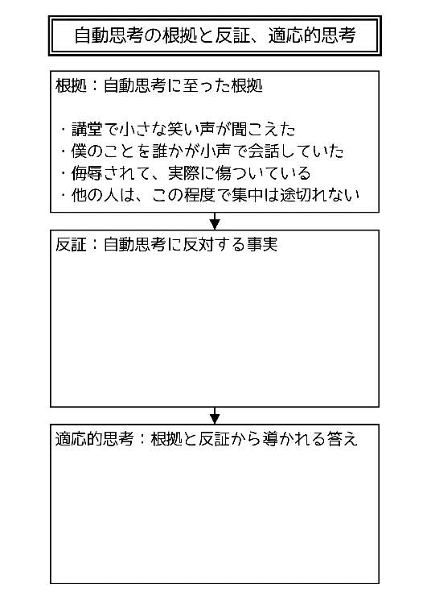
「次は反証を書き出そう。自動思考と対立する意見だ。コツは二つ。事実に基づき考えることと視点を変えること。第三者の立場から見たらどうか、過去の自分ならどう考えたか等、発想の転換をする」
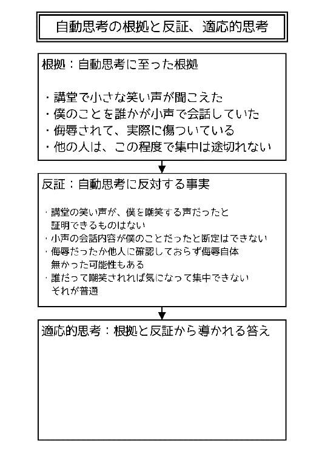
「この反証から導かれる答えを書こう。適応的思考だ」
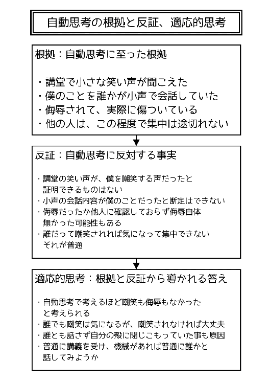
根拠と反証は、先生のアドバイスを受けながらゆっくり書いた。でも適応的思考は自分で書いてみたくなり、一人で書いた。
書き終わった後見上げると、先生は僕の書いた内容を見て目を丸くしていた。何か間違った書き方をしてしまったのだろうか。
「これは驚いた。凄いな」
「えっと、何か間違っていた？」
「違ってなんかいないよ。凄く良くできている。というか一〇〇点満点中一五〇点だ」
「え、そうなの？」
「ほらココ、自分の殻に閉じこもっていたことと、誰かと話してみようかって部分。普通はこういった前向きな提案が出ることは少ない。うつ病のときは、後ろ向きになることが多いから」
そうか......これは凄いのか。先生に言われ、少しだけ得意げになる。
「字は間違っているけどね。機械じゃなく機会だ。たいした問題じゃないが」
中学生レベルの漢字を間違うとは......我ながら恥ずかしい。
「とにかく、良くできているよ。さ、それじゃ仕上げをしよう。反証と適応思考から、最初の自動思考の感情部分がどう変化したか書く。ちなみに新しい感情が芽生えた場合は記載する」
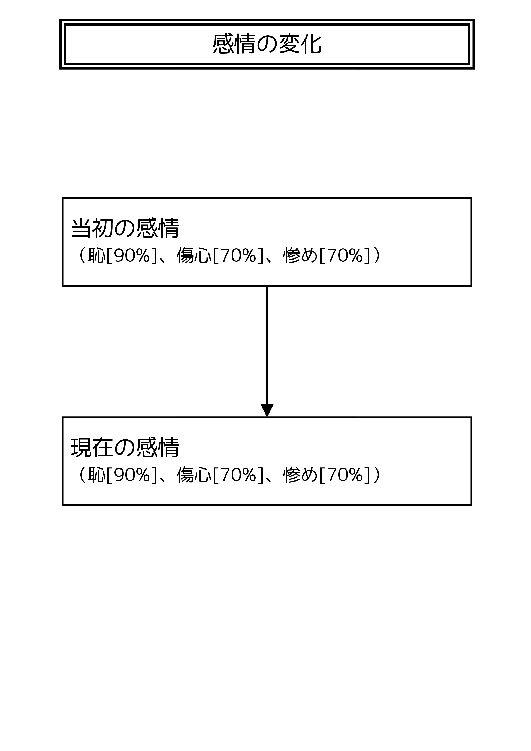
「これで終了だ。少しでも気持ちが楽になっていれば成功。大きく変わっていなくても、適応的思考で今後のプラン、シナリオができていれば大丈夫と言って良い。この方法は、コラム法とか認知再構成法とか言われる有名なやり方を少しだけアレンジしたもの。本とかも売っていると思うよ」
僕はもう一度、自分の書いた内容を見直した。
気持ちが大きく変わったわけじゃない。でもほんの少しだけ楽になった。そんな感想だ。それよりも、辛かった出来事に対して色々考え、前向きな内容を書き出せたこと。その達成感のほうが大きい。
「物事をどう解釈するかは人によって違う。同じ人でも環境や時々の感情によって違う。だから後ろ向きの解釈をしてしまうのはよくあること。でも人間は、ちゃんと状況を整理して再認識すると前向きな解釈をすることができる。これはパブロフの犬。すなわち練習を繰り返すほど、上手に素早くできるようになる」
そこまで言って先生は一呼吸置いた。そして再び口を開ける。
「吾輩なんて、やりすぎて全てのことを前向きにしか解釈しないようになったよ。何が起きても大丈夫！ なんて具合に」
先生は舌を少しだけ出した。
この猫、自分がどんな顔をすれば可愛いのか、わかってやっていそうだから怖い。
「今日の講義はここまでにしよう。君も疲れただろうしね」
あざとい可愛さをわかっている小動物は、そう言うといつも通り自分の寝床にパタリと倒れこんだ。間もなくスヤスヤと昼寝を始める。
何が起きても大丈夫......か。本当にそんな風に思えるようになるのだろうか。いや大丈夫じゃないこともある。先生だって僕がいなければ、一人で水も飲めないじゃないか。今日も沢山喋っていたからな......。
先生用の皿に水を入れ、音を立てないよう置いた。昼寝から起き、美味しそうに飲む姿が目に浮かぶ。
僕も喉が渇いた。たまには......水ではなく違うものでも飲んでみようか。
珍しくそんな気分になったので、先生の安眠を邪魔しないよう僕はそっと外に出た。
目的地は最寄りのコンビニ。
昼時や夕方は人も多いが、この時間帯ならそれはない。今なら大丈夫。こうして光を浴びることは良いこと。先生もそう言っていたし。
店内に人がいないのを外から眺めて確認すると、僕は静かに入店した。
泥棒みたいだ。
そう思いながら、雑誌コーナー経由でドリンクの並ぶ冷蔵庫に向かう。
大きなガラス戸。奥には冷えた飲み物。その手前には、反射で映る僕の顔。
自分の顔を見るのはあまり好きじゃない。僕の顔は、目の下にクマができやすい。これが原因で大抵不健康そうな顔になる。今日だって......いや、昔よりは少しマシになっただろうか。少し笑ってみた。
「らっしゃーせー」
声に驚き、慌てて飲み物を一本だけ手に取る。
多分、他の客が入ってきたのだろう。
ドリンクコーナーを離れ、菓子が並ぶ棚に入る。そしてそのままレジで会計を済ませ、すぐに外に出た。
まぶしい日の光。それを浴びて思い返す。
僕は......なぜこんなに慌てたのだろう。何に怯えていたのだろう。きっと今の客は僕の知っている人じゃない。コソコソする必要はない。
そう思い、足を止め振り返る。コンビニから足早に去っていくサラリーマン風の男。彼は、僕が見ていることに気づかない。
買った飲み物を一口飲み、僕は先生から教わった考え方を思い出した。
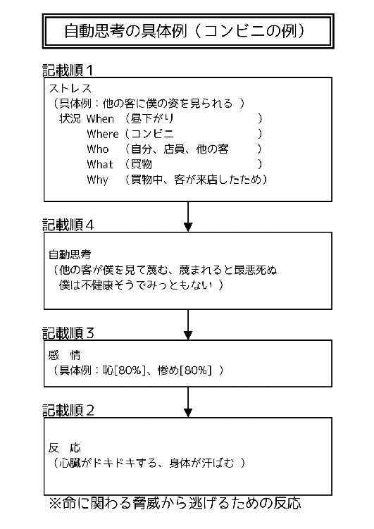
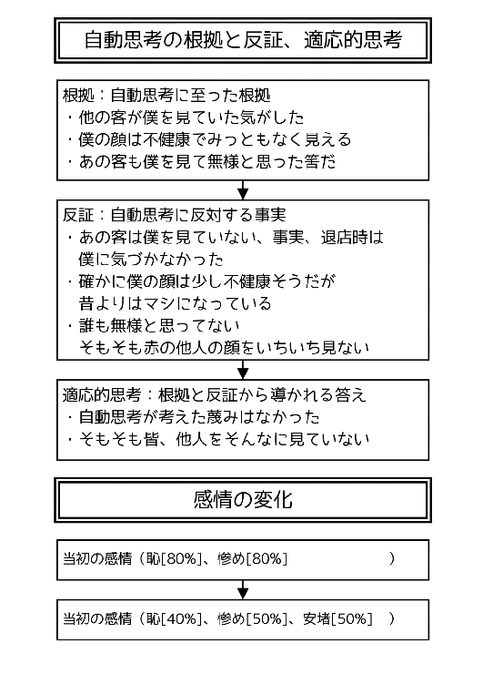
今、ペンと紙を持っていないことを後悔している。頭の中では随分綺麗にまとまった。これを見せたら先生はきっと喜ぶだろう。とはいえ、このためだけに今から筆記用具を買うのは気が引ける。
少し残念な気持ちを抱えながら、僕は歩き出した。ガードレール沿いに歩き、角を曲がる。少し細い道を行き、次の曲がり角にさしかかる。間もなく自宅。視界にそれが映ったとき、ちょうど先生が出て行くのが見えた。僕はそっと歩みを止める。あのサラリーマンと同じで、先生は自分を見つめる存在に全く気づかない。
今から散歩かな。どこまで歩いて行くのだろう。ふと疑問が沸いた。
今日は天気が良い。光を浴びることは良いこと。だから......
僕はこっそり、先生の後をつけることにした。
先生を見失わない程度の距離で。先生に気づかれないよう慎重に。それを保ち、静かに歩く。
コソコソするのは今日これで二回目。ただし、一回目とは違う。今はコソコソする正当な理由がある。だから堂々とコソコソしている。日本語としては完全に変だが、言っていることは多分間違っていない。
最初、先生は普通に歩いていた。しかし途中から猫独自のルートを歩き出す。
茂みの間。
人の入れない路地。
塀の上。
土地勘はあるので先回りしたり、見えないところでは走ったりしたが結局は見失った。
残念ながら探偵職は向いていないようだ。でもちょっと楽しかった。大体のルートは判ったから、今度はもう少し上手に先回りしてみよう。
心が僅かに弾むのを感じる。ふと子供の頃を思い出した。
幼い頃、毎日が楽しかった。出かけるときは冒険だった。猫の後をつけたこともある。人が入れそうにない小さな茂みの間も、あの頃は迷わず入れた。でも今は無理だ。
「無理......か」
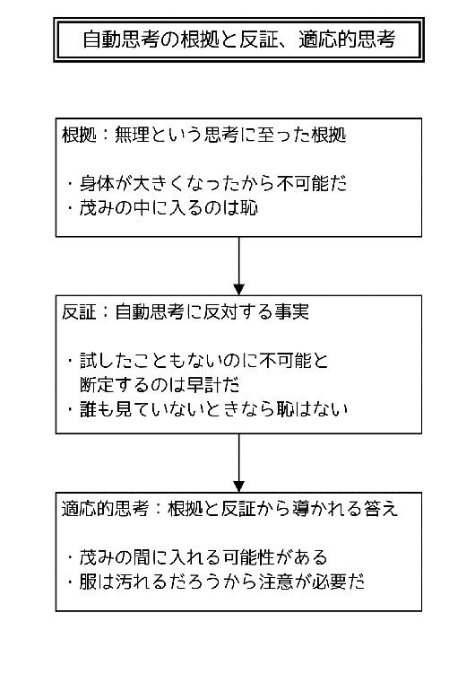
......そうか。幼い頃、これは無理だ、という思考は働かなかった。しかし大人になるにつれ、色々な経験をして、これは無理だ、これはダメだと自動的に判断するようになった。確かにその意見が正しく、無理なことも多い。でもそれはちゃんと反証したのだろうか。根拠と反証から導かれる適応的思考を導いたのだろうか。もっとも、今その反証を試す気はない。きっと服も汚れるだろうし、先生に追いつけるとも思えない。
「......帰ろう」
踵を返し、僕は帰ることにした。
その夜、先生が帰宅したのは深夜。
疲れた顔はしていたが、何故だか少し嬉そうだった。きっと充実した散歩だったのだろう。
翌日、先生は一日休みを取ると言い出した。
次の日に疲れを残すほど散歩するなんて......先生も子供だなぁ。そんなことを思いながら、僕も一緒に一日ゆっくり過ごした。
ゆっくりしすぎて、いつの間にかうたた寝してしまったようだ。今日も先生は、しらないうちに散歩に出かけていた。そして家に戻ったのは、夜も深けてからだった。
――――身体が重い。でも、まだ倒れるわけにはいかない。
大丈夫......動ける。
これくらい......大丈夫。
夏はとうに終わり今は秋。なのに午後の太陽はそれを忘れ、この身体を暖めてくれる。それだけでも随分楽になる。
体力を温存するため、いくつか見つけた特別な近道を行く。
茂みの間。
人の入れない路地。
塀の上。
古ぼけた家の庭。
人の道より遥かに近い道。人の歩みは遠回りなのだ。
人間は賢い。先人の知恵を集め、文明を生み出し、歴史を紡いできた。積み重なったエビデンスは後から学ぶ者を助け、また新たなエビデンスを生む。誰かの築いた道を、また新たに誰かが進む。
繰り返す。ひたすら同じ道を繰り返す。
少しだけ道を外れることもあるのだろう。遠回りも近道もある。しかし、どれも人が通れる道に過ぎない。果たしてその道だけが、正しい道なのだろうか。他にも道があるのではなかろうか。
茂みを抜けるとあの家が見える。窓は少し開いていた――――
『うつ病の人がして欲しいこと、して欲しくないこと』
「おはよう。大丈夫かい？ 何か難しそうな顔をしていたけど」
「先生......おはよ、うん......変な夢を見ていたみたい。内容はもう忘れちゃったけど......いつもの悪い夢じゃないと思う」
「それなら良かった。では、顔を洗って吾輩の朝食を作ってくれるかい？ 空腹すぎて死んでしまいそうだよ」
「あーはいはい」
いつもと同じ日常。もうこれが、当たり前になりつつある。先生と一緒にする認知行動療法の練習。そのあと先生は散歩。僕はゆっくり過ごしたり、自習したり。
ちなみにあの後、何度か先生の後をつけてみた。でも、いつも肝心なところで見失う。やはり僕は、探偵向きではないらしい。
先生の帰り時間はバラバラだ。早く帰ってくることもあれば、夜遅くなることも......。
「あ、おかえり」
今夜の帰宅は比較的遅かった。
僕は先生用の水を用意する。もうこれもお決まりの行動パターン。美味しそうに水を飲む先生の姿は嫌いじゃない。もっとも、あまり見ていると怒られるので、チラっと見るだけにしているが。
「ふう......」
「今日はあまり飲まないね」
「あまり喉が渇いていないので、続きはまた後にするよ。ところでちょっと良いかい？ 少しだけ講義をしたいのだが」
「珍しいね、こんな遅い時間に。僕は大丈夫だよ」
「......では始めよう。前にも言った通り認知行動療法は、ついてしまった悪い癖に対し、良い癖を繰り返すことで正す方法。ただ、いきなり難しい課題を対応してはいけないよ。君は、第一回目の練習で自分の最も苦しんでいた課題にチャレンジしてしまったが、通常これはご法度だ。本来は簡単な事例を繰り返し、徐々に難しいものに挑む」
「そ、そうなの？」
「認知行動療法というのは車や自転車の運転技術と同じ技術の習得に分類される。自転車に乗るには何度も練習が必要だけど、今日は乗れたのに、明日転ぶことだってある。スランプに陥るときもある。技術は、上下を繰り返しながら上達するもの。だから急に難しい課題にチャレンジするのは危険を伴う」
「ふむふむ」
「あと技術を高めるにはコツがある。繰り返す、育つ様子を見えるようにする、褒める。この三つだ。今回用意したテンプレートを使って、何度も繰り返し、記録に残し、上手にできたときは褒める」
「確かに、先生褒めてくれるよね」
「自分で褒めることも大切だよ。認知行動療法として自分の内側を文字に書き出すことは大変なこと。だから完成時は、自分や自分の身の回りの人たちと、一緒に全力で喜ぶべきなのさ」
そこまで言って先生は急に黙り込んだ。少しの間、沈黙が辺りを包む。
「......君の容態は随分良くなっている。だから全部説明したい。うつ病には、その人を支える人が必要であること。そしてその人が心がけるべきことを。君もいつか、支える側に立つかもしれない」
「そんなのありえないよ」
「でも、聞いて欲しい。苦しみながらも今、君は立ち直りつつある。苦しみを知ったからこそ分かると思う。支えてくれる人の大きさを」
「支えてくれる人......」
僕には先生がいた。僕の治療をし、栄養管理をし、生活リズムを整えた。そして一緒に認知行動療法を練習した。確かにサポートが無ければ、僕はずっと俯いたままだっただろう。
「治療、栄養管理、そういった目に見えるサポートも大切。ただそれ以上に家族とか仲間とか、身近な人が共に歩み、支えることが大切だ。人を支えるのを難しく考えすぎる必要はないよ。一人の人として誰かを思いやる、そう考えれば良い。それが結果として、病を持つ人の支えになる」
「思いやる......」
「ただし、思いやるつもりでも、知らないうちにタブーを犯してしまうことがある。それも説明するよ」
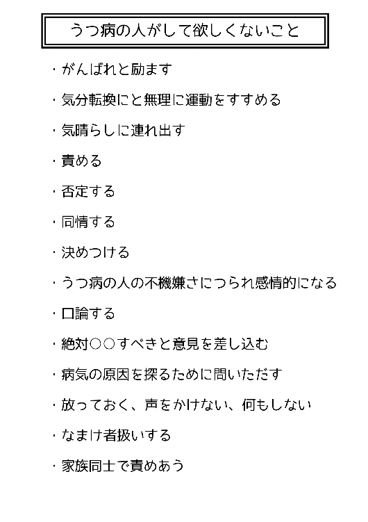
「病気のときは体力や気力も落ちているから頑張りたくても頑張れない。物事への興味や、楽しいと思う力も落ちているから、気晴らしさえ義務的に感じて、疲れてしまう。そんな状況だから、外面では放っておいてと言っていても内面では孤独を感じている。この中のいくつかは、実際君も感じていた筈だ」
「うん......」
「だから、こういったことを望んでいる」
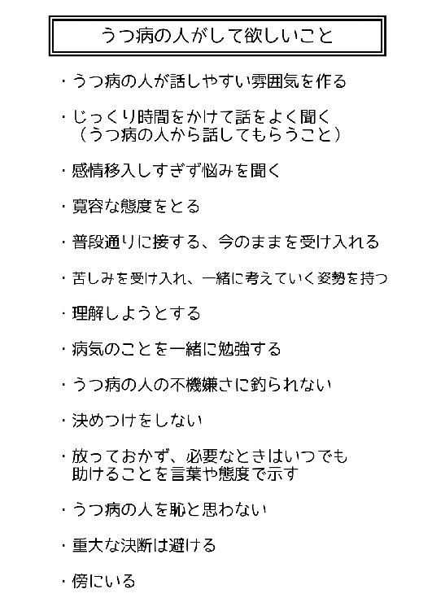
「はげましよりも休息。そして見守りを必要としている。話したいけど話し出せない。そんなときには、寛容な態度で普段通り接し、話しやすい雰囲気でいつも待っていてくれる人が必要だ。病気を受け入れ一緒に考えてくれる人が。そして何より......」
「......傍にいる」
先生がいつも、僕を見守ってくれていたように。心の中でそう付け足した。先生は何も言わずに頷き、静かに目を閉じた。
ゆっくりと呼吸する。そして再び、先生は目を開ける。
「自ら命を絶とうと考えても、大切な人が傍にいることで踏みとどまる事がある。逆に、大切な人がいなければ、人はあまりにも容易く命を落とす。吾輩も見てきた。この目で」
先生の目つきが変わる。医療者の目だ。きっと現場で、自ら命を絶った人を見たに違いない。目の奥に力強い炎があった。
少しだけの沈黙。言葉のない空間。
......ぽつり。
蛇口から一滴、水の落ちる音がした。
（だから、もう......誰も死なせない）
その音が、僕には声に聞こえた。
「......遅くなってしまったね。もう寝よう。最近は君も一人で散歩ができているようだし、良い傾向だよ。でも、探偵には向いていないから、職選びをするときは慎重にね」
バレていたか......。やはり先生には敵わないな。
僕はいつか先生がやったように、舌を少しだけ出して笑って見せた。
翌日もいつも通り。先生と一緒に学び、先生は昼寝。多分その後散歩だろう。
僕も一緒に散歩することを提案したが、壁の上は歩けないだろうと一笑された。ただ、こっそりとついてくるのは構わないそうだ。完全に巻ける自信があるらしい。
ちょっと悔しかったので、今日こそは先生の後を最後まで追ってみることにした。
先生が寝たのを見計らい外に出る。そして物陰に隠れて先生の外出を待った。
かくれんぼ。そんな言葉を思い出す。子供の頃はよくやった。隠れているときが一番楽しかった。
僕が茂みの中に隠れる。誰かが近くまで探しに来る。でも気づかない。
その姿が滑稽で、いつも笑いをこらえるのに必死だった。声を出してしまい、見つかったこともあった。
先生の姿が見える。僕が覗いていることには恐らく気づいていない。
だから先生以上の猫足で、先生のストーカーを始めることにした。
途中までは順調。しかし、猫独自ルートが始まると難易度は一変。
何度か尾行しているので大体は予想ができる。先回りできる部分は極力先回りをした。そして、最後にたどり着いた先......。
「ここは......」
いつの間にか僕は、少し大きめの公園内にいた。
目的地なのか通過地点なのかは分からない。でも先生は今、この茂みの奥にいる。
池や小川もある公園。今から迂回すると時間がかかり、先生を見失う可能性が高い。
「隙間としてはギリギリ......」
前回の検討の結果、根拠と反証から導かれる適応的思考によると、服の汚れを気にしなければ不可能ではないという結論に達している。
「やるしか......ないか」
覚悟を決めて、僕は茂みに潜り込んだ。中に入るとすぐに、僕の適応的思考は正しかったと知らされる。意外と広いのだ。確かに猫ではあるが、先生だって自分の身体が小枝で傷ついてしまう程の狭い部分は通らないのだろう。
しかし、大人が入れるのは意外だった。ただ問題は距離。這いつくばって進むには少々苦しい長さ。
諦めずに前進を続けていると、やっとトンネルの先に明かりが見えた。視界の先には、芝生が広がっている。
「ふぅ......やっと出られた。あ......」
僕が抜け出した穴の少し先。先生がいる。のんきに寝転がって、僕を眺めている。
遅かったね、随分待ったよ。そう言いたそうな顔で。
「先生......知っていたの？ もう、やっぱり先生には敵わな......あ」
「えっ？」
「......」
「......は、はじめまして」
「あ、はい」
先生ばかり見ていて完全に見落とした。寝転ぶ先生の近くに、一人の女性がいる。
「......はいじゃないよ。そういうときは、はじめまして。と、言うのが普通だ」
「あ、はい。はじめまして」
先生に指摘され、慌てて挨拶をする。
「えっと......この子の飼い主さん？」
「え」
「......はいって言っておきなさい。僕の主治医です、じゃ変だろう？」
「あ、はい、飼い主です。よろしくおねがいします」
「くすっ......あ、ごめんなさい。この子の鳴き声を聞いてから毎回台詞を言っているように見えるから」
「そ、そうですね......ははは」
言っているように見えるではなく、実際に台詞を教えられ復唱している。でも鳴き声にしか聞こえないってことは......やはり先生の声は、僕にしか聞こえないのか。
「吾輩の台詞は、彼女には聞こえないよ」
「......やっぱり」
「どうかされました？」
「あ、いえいえ、なんでもありません。えっと先生のお友達ですか？」
「お友達......なのかな」
「先生酷いよ。僕に何も言わず」
「くすっ......やっぱり面白い人。それにセンセーって名前も変。あなたがつけたの？」
「あ、先生ってのは......」
「そうです」
「あ、はい、そうです」
その女の人は小さく笑っていた。太陽の光に照らされて。
失礼ながら美人とか可愛いとかではないと思う。どちらかというと日陰で大人しくしていそうな人。僕と同じ位か、少しだけ年上。
でも、その笑顔は綺麗だった。
その後のことはあまり覚えていない。久しぶりに人と話し、極度に緊張していた僕は、ほとんど先生の台詞を復唱していただけだったから。名前も教えてもらった筈だが、それすら覚えていない。いつのまにか女の人は帰り、公園には僕と先生だけになっていた。
「......」
「......生きているかい？」
「い、生きているかい？」
「いやもう復唱はいいよ。彼女は帰った後だ」
「え、そうなの？ あ、本当だ。......先生酷いよ」
「確かに。いつかは紹介しようと思っていたけど......今日まさか、君が諦めずに最後まで追ってくるとは思っていなかった」
先生はお座りをしたままペコリと頭を下げた。
この猫......絶対あざとい。こんな風にされたら、誰だって許してしまう。
「あの人......」
「吾輩の大切な友人だ」
「昔からの？」
「ま、そんなところかな」
「先生のこと普通の猫だと思っていた」
「そうだね。吾輩の言葉は君にしか聞こえない」
「やっぱりそうだったのか。不思議」
「君と吾輩は、脳の波長が似ているのだろう。双子だと、互いの考えていることがわかるなんて話もあるからね。もっとも吾輩たちの波長が似ているのは単なる偶然だろうが」
「双子ねぇ......あ、先生が散歩で遅い日は、ここであの人と会っていたから？」
「毎回公園にいるわけじゃないよ。彼女の家でくつろいでいる日もある」
「なにそれ。密会する恋人みたい」
「それは違う。君だって雌猫を恋人にはしないだろう？ 彼女は人、吾輩は猫だよ」
「そういうものかな」
「ちなみに君は先ほどの会話で吾輩の飼い主ってことになったから、今後は相応しい振る舞いをするように」
「え、そんなこと話していた？」
「本当に何も覚えていないのか......」
「う......」
「まったく、君ってやつは......」
先生の呆れ顔に、僕は返す言葉もなかった。
台詞の復唱を話せたと表現するのは、少々おこがましいかもしれない。でも僕は久しぶりに人と話せたことに浮かれていた。お陰で夜は中々寝付けず、翌朝は寝坊して先生に起こされるハメになる。
「......おはよ」
「おはよう。さて、君がこうして起きるまで、吾輩はどれくらい君の頬をこの手で押していたか知っているかい？」
「先生......痛いれふ......」
「とにかく、早く顔を洗ってきなさい」
「はい......」
こうして今日も普通の日常が始まる。カーテンを空け、日の光を浴び、顔を洗って朝食を取り、ゆっくり過ごす。午後にさしかかる頃だ。突然先生が、ある提案を持ち出した。
「そろそろリハビリを始めよう」
「え」
「回復期の治療というものがある。社会への復帰をイメージした治療だ」
社会への復帰......。
そう言われ僕は考え込む。確かに、戻れるなら昔のように戻りたい。早く元通りの生活をしたい。口には出さなくても、心のどこかではずっと焦っていたような気がする。
「ちゃんと説明するよ。憂うつな気分、不安、自分を責める気持ち等の症状が軽くなり、億劫さが残っているくらいの頃がリハビリの開始時期だ。吾輩が見るに、君の容態は随分良くなった。自分で認知行動療法もできるようになっている」
「もう治ったってこと？」
「ちょっと違うね。今は傷口にカサブタができた状態。だから、焦ってはいけない。まだ完全な皮膚ができているわけではないからね。早く復帰したい気持ちを抑えつつ一歩一歩進めて行く。だから手始めに......」
「うん」
「人と話すところからはじめてみようか。学校はその後だ」
「え......」
「ちょうど良い相手も昨日見つかったし」
ニヤリ。先生はそんな風に笑った。
ちょっとだけ背筋が寒くなるのを感じる。
「そんなに青い顔をしなくても大丈夫。吾輩もサポートするから。ただし、昨日のような台詞復唱人形は勘弁してくれ」
「え、あ、はい」
「よし。吾輩は出かけるよ。君は一五時過ぎくらいに公園に来るように。良いね？」
「え、あ、はい」
「あー、ダメだな、これは。ちょっとそこに座りたまえ」
「あ、はい」
ぺち。
「ふがっ。先生何するの」
「猫パンチだ。あまりにも腑抜けた顔だったからね」
「だからと言って殴ることはないじゃないか」
「思いっきり引っ掻いたほうが良かったかな？」
「いえ、それはもっと嫌です」
「判れば宜しい。別にお見合いをしろと言っているわけじゃない、適当な世間話をするだけだから、そんなに固くならなくても良いだろう。それにこれも君の治療の一環なのだから」
「本当かなぁ......」
「本当だよ。ちなみに昨日の彼女は君より二つ上の社会人だ。失礼のないようにね。あと仕事の話は止めてくれ。彼女は今休暇中。せっかくの休暇に、仕事の話はしたくないだろう？」
「はーい」
「......」
「は、はい！ わかりました！ だから爪はやめてください」
「わかればよろしい。では一五時過ぎに」
「はい......」
そう言うと先生は僕を置き去りにして行ってしまった。
治療の一環と言っていたけど......うろたえる僕を見て、楽しんでいるだけじゃないのか、あの猫は。
とは言え、逆らって引っ掻かれるのも嫌だし......一五時になったら出かけよう。そう思いながら僕は、時計を見上げていた。
「あ、あ、どうも」
「こんにちは」
「い、いつも先生がお世話になっています」
「いえいえ。今日もお迎えですか？」
「あ、いえ、今日は散歩。先生散歩。僕も散歩。ここに来ました」
「くすっ」
あぁ、笑われている。僕は今、笑われている。
「はぁ......今日は特別に吾輩が反証を提供しよう。笑われるのは命に関わる脅威ではないし、どちらかというと好意的な笑いだ。安心しなさい」
「は、はい、先生」
「......本当に面白い人。まるでセンセーと話しているみたい」
「否定しなさい」
「はい......あ、えっと、話はできないです。でもなんか何となく先生の言いたいことが、わかるような気がして」
「言いたいことですか......確かにこの子、凄く賢いですよね」
「そう！ 先生凄いんですよ！」
「センセーのこと、大好きなのね」
そこから先、僕たちは先生の話ばかりしていたような気がする。もちろん先生と話せるのは内緒なので適当に誤魔化しながら。でも共通の話題のお陰で、僕の口調もいつしか普通に戻っていた。
気づけば先生も僕の会話のアシストは止めて昼寝を始めている。まったく、よく寝る猫だ。
「もうこんな時間」
「本当だ......すみません、色々話し込んでしまって。先生、起きて」
「......ん、おはよう」
「おはよ。センセー」
「え？ 言葉がわかるの？」
「ううん、あなたと同じ。何となくセンセーの言ったことが、わかったような気がしたから」
「そ、そうですか......」
あくびをする先生。そのまま周りを見渡し、少しだけ眉間にしわを寄せながら僕に小さく呟いた。
「暗くなってきている。家の付近まで送ると言いなさい」
「あ、あの、暗くなってきましたし、良かったら送ります」
「そう言わないとセンセーに叱られるから？」
「え？ やっぱり言葉がわかるの？」
「ちがいますよ。何となくです。でも合っていたでしょう？」
「先生の言葉は分からないから......」
僕は笑って誤魔化した。
僕の目の前の女性も、それを見て笑っていた。
「先生......あの人は本当に先生の言葉が分からないの？」
女性を家まで送った帰り道、僕は先生に尋ねた。
「残念ながらそうだよ。今日通じたように見えたのは彼女の勘が当たっただけ。彼女自身まさか医学を嗜む猫が実在するなんて、夢にも思っていない。だから言葉は通じないし、吾輩が彼女の言葉を聞き、ボディアクションで反応しても、せいぜい賢い猫だと思われる程度」
そこまで言うと、先生は急に立ち止まる。
「わ......が輩、もう少し......散歩して、帰るから、ここで」
「うん、暗いから気をつけて」
僕がそう声をかけると、先生は振り向きもせずに視界から消えてしまった。
気まぐれな先生。でもお陰で今日は普通に話ができた。台詞復唱ではなく自分の言葉で。きっと良いリハビリになったに違いない。
そこまで考え、自分の考え方が随分と前向きになっていることに驚く。しっかり栄養を取り、休み、規則正しい生活をしたからだろうか。毎日色々教えられながら、学んできたお陰だろうか。それとも、事あるごとに認知行動療法の練習をしているからだろうか。......本当に頭が上がらない。
闇の中に静かに消えた偉大な猫。その行き先を目で追う。
「ありがとうございます」
もう見えないその姿に会釈をし、僕は一人自宅に向かった。
それから数日、大きな変化はない。
ただあの後、数回三人で会話をする機会があった。とはいえ先生は昼寝していることが多いので、結局僕ら二人で先生のことを話しているだけ。
話を聞いていて気づいたのは、あの人も先生が大好きだってこと。もちろん先生が医師だということは知らない。先生の言葉も聞こえない。ただ、常に的確な反応を示す先生に対し、素直に感心しているようだった。
「それでさ、先生が水を飲む仕草が意外と可愛くて。いつも偉そうなのに」
「えー、見てみたいな」
「簡単だよ。皿に水を入れて目の前に置くだけ。もっとも、眠いときは昼寝を優先させるみたいだけど」
「うーん......」
「どうしたの？」
「センセーが物を口にするところを見たことがないの。水をあげようとしたこともあるけど、いらないって素振りで......」
「そうなの？ ウチでは普通に食べるし、水も飲むよ？」
「やっぱり飼い主と他人の違いなのかな」
「僕も飼い主というほど飼い主じゃないし......先生なりに謎のコダワリがあるのかも」
「本当、不思議な子ね......」
昼寝する先生。その黒い毛並みは、木漏れ日を浴びて所々輝いて見える。
隣には、それを優しく撫でる女性。子供の頃から一緒......そんな人へ向けられる眼差し。いや、これは子を慈しむ母の瞳だろうか。
「......僕より飼い主みたい」
口に出すつもりは無かったが、思わず言葉が漏れた。
「ううん。私は飼い主にはなれない。猫を飼えるほど人間ができていないもの」
「僕だってできていないよ。だから毎日先生に色々教わっている」
「変な飼い主さん」
そう言って、女性は笑っていた。
「先生の本当の飼い主ってさ、あの人と似ていたりしない？」
ある晩、ふいに質問してみた。
特に何かを詮索するつもりではない。ただ単に気になっただけ。
「飼い主......どうしてそんなことを？」
「先生が人に懐く姿ってイメージできないけど、あの人の前ではただの猫っぽい。加えてあの人が先生を撫でるときの姿、それも凄く飼い主っぽい」
「ただの猫か」
「ごめん悪い意味じゃなくて、なんて言うか......ほら、先生は先生でしょ？ 知識と経験が沢山あるから相応の気位があるわけで......でも、あの人と話しているときは結構、昼寝しているから」
「説明なっていないけど、君の言いたいことは大枠理解できたよ」
「よかった」
「そうだな......よし、次の段階に移ろう」
「へ？」
「リハビリの次の段階。学校へ行ってみよう。今の君ならもう大丈夫」
「......」
「心配はいらない。反証から導かれる適応的思考。そういった考え方が自然にできるようになっている。まずは一つだけ講義を受けてみないか？ 講堂の後ろのほうに座っているだけで良い。なんなら吾輩が君の鞄の中で控えていよう」
「いや、それは流石に悪いからいいよ」
「そうか。では校門まで見送る程度にしよう」
「見送るのも玄関までで良いよ......明日行ってみる」
学校......つまり明日から、元の生活が始まるということ。
体調の悪化は、夏休みに入る少し前。夏休みが明けてからは一度も行っていない。そんな気分にはならなかったから。行っても講義は頭に入らないし、課題も解けない。そう思っていたから。
「不安そうな君に良いことを教えよう」
「うん？」
「吾輩は医師である。つまり非常に頭が良い。普通の大学の課題くらい全て難なく解ける」
「え、そうなの？」
「君は吾輩を馬鹿にしているのかい？ 知識だけなら君の十倍以上は余裕だよ。よって、勉強は吾輩が教えることもできる。君は単に講義に出て適応的思考を試すだけで良い」
「......」
「信じていないようだね。......仕方ない、適当な教科書か問題集を一冊持ってきなさい」
「はぁ......」
この後、僕は先生の本気を垣間見る。
僕が選んだのは、恐らく自分が持っている教科書の中で最も難しそうなもの。しかし、どのページを選んでも、先生は問題を簡単に解いて見せた。一題も間違えることなく。
そのときのドヤ顔は筆舌に尽くし難い。効果音で、ドヤァァァと聞こえてきそうな勢いだった。
「せ、先生って......本当に猫？」
「だから医師で、精神科医で、結構な名医だと前にも言ったはずだが？」
「はい、失礼いたしました」
「わかればよろしい。それじゃ、今日は早めに寝よう。良いね」
「はい、先生！」
本当に凄い。いや頭が良いとかではない。難しい問題を解くだけで、僕の気持ちを軽くしたからだ。
その夜、僕は何の夢も見ず、朝までぐっすり眠れた。
「それじゃ......行って来ます！」
「うん、いってらっしゃい」
玄関で先生に見送られ、僕は歩き出す。
最後にこの道を歩いたのは夏が始まる頃。蒸し暑い空気に汗をかきながら歩いた。いや、あれは単に気温のせいだけじゃなかった筈。
今、季節は秋。もう僕の汗を誘うものは何もない。
校門を過ぎ、適当な講堂に入る。今日の仕事は、何でも良いから一つ講義を受けて帰ること。帰ってそれを報告すること。
行われている講義の一覧を確認し、広めの講堂で出席も取らないと思われるものを選んだ。大学によっては、ＩＣカードがなければ講堂にすら入れないらしいが、僕の学校はそこまで厳しくない。
徐々に生徒たちが集まり、教壇に教授が立つと講義が始まった。
後ろの席から講堂全体を見渡す。ノートをとる者。昼寝をする者。小さな声で喋る者。携帯に夢中な者もいる。ただ一つ共通なのは、皆、自分たちにしか興味がないということ。自分のノート、隣に座っている友達、呟きを表示する画面......。僕のように、他人を注意深く観察している者は一人もいない。あのとき、先生と一緒に書き出した適応的思考は正しかったのだと改めて認識する。
途中から暇になってきたので素直にノートをとり始めた。改めて見直すと、内容も難しくない。ふいに先生の言葉が脳裏に浮かぶ。
「うつ病と言われても、そう落ち込む必要はないよ。日本人の約一五人に一人は経験するメジャーな病気だ。症状としてはこんな風になる」
そういって先生は症状をツラツラと並べた。内容は殆ど記憶にないが、思考力・集中力の減退というものもあったような気がする。
あの頃の僕は病んでいた。思考力や集中力も、今とは比べ物にならないほど低下していたのだろう。
いつのまにか講義は終わり、講堂には誰もいなくなっていた。
家に帰ると僕は、ありのままを報告した。先生はそれを、嬉しそうな顔で聞いていた。
僕の日常は昔の姿に戻りつつある。調子が悪い日は先生に止められたけど、それ以外は普通に学校にも行くようになった。昔と違うのは、規則正しい生活をするようになったのと、話し相手ができたこと。猫の先生。そして先生の友人。時々先生の誘いに乗り公園で話している。どこからどう見ても、あの人の猫とオマケの僕という構図だが、そこはもう気にしない。ただ、気になることもある。
「先生、あの人の家でくつろぐ日もあると言っていたけど、他にもそういう友達が、沢山いるの？」
「いや。残念ながら友達は多いほうではないからね」
「もっと色々な人脈があるのかと思っていた」
「猫だから人脈はないよ。吾輩の言葉が聞こえる珍しい人間も君くらい。それも、理由の一つではあるが」
「じゃ、猫の友達は沢山いるとか？ いや医者だから猫の患者かな？」
「......」
「......図星？」
「猫の友達も患者もいない。吾輩の担当患者は二人だけ」
「ということは、一人は僕として、もう一人は......あ、あの人？ どこか悪いの？」
「......」
「ごめん、プライバシーに関わるから聞かないほうが良いよね」
「いや、良いよ。いつかは話そうと思っていた。もう一人の患者は彼女。病名は君と同じ。そして君より深刻」
「え......そんな風には見えないけど......」
「君が会っているのは調子の良い日だけ。調子が良いと言っても朝と夜は不安定なことが多いよ」
「そうだったのか......」
「うつ病にも色々ある。双極性気分障害......躁うつ病と言ったほうが良いかな？ 気分が落ちる時期と上がる時期があるような病気もある。仕事の話を避けたのも、彼女が今病気療養で休職中だから」
「療養中ってことは病院に通っているの？」
「通院はしていない。彼女は病院を毛嫌いしている。特に精神科。良くない思い出があるらしい。本当はちゃんと通院して服薬して欲しいし、入院治療も有効なのだが......」
あの人も病気だったなんて、にわかに信じられない。確かに健康そうなイメージは無かったが、病気のようにも見えなかったから。
「でも心配は不要だ。吾輩を誰だと思っている？ 名医中の名医だよ。たとえ言葉が通じなくても、吾輩が主治医になって治らない患者はいない」
「そう......だよね」
「だから、今日の話は忘れて欲しい。いつか話した、うつ病の人がしてほしいこと、してほしくないことを思い出して。彼女に必要なのは普通に接してくれる人。それが一番ありがたい」
「うん......」
「このところ彼女の調子も良いし。ところで一つ相談があるのだが」
「相談？」
「いつも行く公園の付近の神社で、もうすぐ秋祭りがある」
「あー、そういえば何処かの看板に書いてあった気がする」
「彼女が話していたのを前に聞いてね。通常、うつ病中に、そういったイベントに興味を持つことは殆どない。だからお願いがある。彼女を秋祭りに誘ってくれないか？」
「え」
「もう一度言うよ。彼女に必要なのは普通に接してくれる人。だから君も普通に話して、普通に祭りを楽しむだけで良い」
「普通に......か」
「頼まれてくれるかい？」
「先生の頼みじゃ断れないよ。僕もお世話になりっぱなしだから」
「そう言って貰えると嬉しいよ。ただ、最終的な決断は当日彼女が決められるようにして欲しい。不要なストレスは持たせたくない」
「うん、わかったよ」
祭りか......最後に行ったのはいつだろう。人が多い場所はあまり好きではないけど、久しぶりに行くというのは少し心躍る。
数日後、僕は電話をかけた。先生が遊びに行くことも多い都合、念のため連絡先を聞いておいたのが功を奏した。電話したのは先生の帰宅を待ってから。先生が診て、今日なら大丈夫という判断後の電話。お互い急な用事が入る可能性もあるからと、最終的に行くかどうかは当日に向こうから連絡を貰うことになった。行けたら行くというスタンスで考えて欲しいと伝えると、快く了承を貰えた。もちろん、僕に急な用事が入る可能性はないのだけど。
かくして当日。大人気なくも心躍らせながら、僕は秋祭りに参加した。
「綿菓子、食べたのは久しぶり」
「僕も。子供の頃に食べた記憶しかないや」
賑やかな祭ばやしが聞こえる。
あまり騒々しい場所は、お互い好きじゃない。だから、少し見物しただけで、すぐに人気の少ないほうに移動した。僕たちは今、二人揃って綿菓子を食べている。
「......センセーって、いつも他人のことばかり考えていると思うの」
「確かにそうだね」
「小さな子なのに私たちより大人みたい」
「先生は大人だよ、僕らよりずっと」
「そうなの？ センセー何歳？」
「えっと......詳しくは知らなくて......」
「変なの」
そう言って彼女は笑った。
境内の明かりが、水色の浴衣に包まれた彼女を優しく照らす。一輪の花を暗闇から浮かび上がらせるように。
「どうしたの？」
「わ......綿菓子美味しいなって。先生にも食べさせたかったな」
「そうね......」
「ごめんね、先生来られなくて」
「ううん。センセーは人が多いところ、辛いと思うし」
「確かに！ 人ごみの中じゃ踏まれちゃうかもしれない」
「守ってあげなきゃ」
「どちらかというと、僕がいつも守られているのだけど」
「それを言うなら私も......かな。だから少しだけ心配」
「どうして？」
「ほら、センセー最近、元気ないでしょ？」
「え？」
「きっと、無理をしていると思うから......」
虚空を見つめる彼女。目線の先には、僕の見えなかったものがある。
先生と一緒にいた時間は、僕と彼女、どちらが長いのだろう。いや、例え彼女のほうが長かったとしても、僕は先生と話せる。なのに、言われるまで気づかなかった。
「......センセーのこと、大好きなのね」
「僕が？」
「ええ。そしてセンセーも、あなたのことが大好きなのだと思う。だから隠しているのよ」
「......」
「私の前でも隠しているもの。ただ私は他人の顔色を伺うのが上手いから......」
「でも僕は......自分のことばかり考えていた。だから......」
......やはりダメだな。僕は。
「......ダメじゃないよ」
うつむきかけていた顔を上げ、彼女を見上げる。今、僕は言葉を発していない。
「それで良いと思うの。センセーもそれを望んでいる」
彼女の後ろで花火が上がった。大きな音が夜空に広がる。
「きっと......ね」
音が消えると同時に、彼女は微笑んだ。
大きく輝いた大輪の花の欠片が残り、それがゆっくり消えていく。静かに煌く光たち。だから僕は目を奪われた。
その花に。
煌く光たちの中で咲く、その花に。
「花火......綺麗ね」
「......うん」
振り返り花火を見つめる彼女。
先生がいたら、きっと茶化すのだろう。......それでも良い。もう少し見とれていたい。
僕はその花を視界の隅に入れたまま、瞬く夜空を見上げていた。
「先生、具合悪いとかない？ 何かあったら言ってよ？」
「突然どうしたんだい？ 気持ち悪いのだが」
祭りの翌日、僕は先生に聞いてみた。彼女と話した内容は言わずに。
「ほら、二人も患者抱えて大変かなって」
「普通、医師は一人で何十人もの患者を担当する。たった二人だけで疲れたと言う医師は、見たことがない」
「そ、そう......だよね」
「気遣ってくれたことには感謝する。ただ自分のことは自分が一番わかっているからね。医者の不養生なんて言葉は、吾輩には似合わない」
「う、うん」
見事に撃沈である。そもそも僕自身、目の前にいる先生の体調の良し悪しが、イマイチ分からない。時々疲れているようにも見えるけど、翌日には元気に散歩に出かけている。自分が探偵向きじゃないことは知っていたけど、これじゃ医師や看護師も難しい。
彼女は一体、何を察したのだろう。一度聞いてみたい。反面、それが格好悪い気がして、気軽に聞くこともできない。無能を曝け出すだけのような気がするから。
僕は、悶々とした日を過ごしていた。
「先生......完全に寝ているよね」
「うん、きっと。定期的な寝息を立てているから」
久しぶりに三人での日向ぼっこ。相変わらず彼女の猫とオマケの僕という構図。そして先生も相変わらず昼寝中。
でも、悶々とするのはもう沢山だ。格好悪いのも覚悟の上で、僕は彼女に聞いてみることにした。
「先生......病気なの？」
「......」
「僕には......分からなくて」
「私にだって正確なことは分からないよ」
「でも......」
「本当にセンセーが心配なら、センセーを心配しすぎないのが一番なんじゃないかな」
「心配しすぎない？」
「例えば子供がいたとして、自分がその親だとして、子供が......自分を心配して不安がる姿を見たい？」
「それは嫌かな」
「それが普通の親......だよね。センセーは私たちを自分の子供のように思ってくれているのだと思う。だから私たちが不安がる姿は、センセーを苦しめるかもしれない」
「......」
格好悪い。本当にそう思う。彼女と先生とオマケの僕だ。
二人はしっかり繋がっている。二人とも大人だから。それにくらべて僕は子供。何も......わかっちゃいない。
「......起きたよ」
彼女が小さな声で教えてくれた。
「おはよ、センセー」
「......おはよう」
先生が彼女に返す。
それは彼女にとって、猫の鳴き声でしかない。でも彼女には先生の心の声が聞こえているように見える。
「おはよう、先生」
少し遅れて、僕は先生に挨拶を返した。
彼女と話す時間は楽しい。ただ二人きりで話したのは、あの祭りの日だけ。それ以降はずっと先生がいた。
別に邪魔ってわけじゃない。一緒に居ても寝ているだけだし。
先生は三人で会う時以外も、彼女のところに頻繁に通っている。彼女は調子の良い日もあるし、悪い日もあると言っていた。だから調子の悪い日も彼女と話しているのだろう。
話しているというのは若干語弊がある。彼女と先生は言葉が通じない。でも話しているのだと思う。言葉は通じなくても、二人は心が通じているように感じるから。先生はきっと、それが治療になると信じている。
僕は......どうなのだろう。反証から導かれる適応的思考。それが上手く働かない。答えがよく分からない。まだ僕の病気は治っていないのだろうか。
今日も先生は遅い時間に帰ってきた。少し疲れた表情で。
「......おかえり」
「ただいま......」
「......」
「......少し......良いかな」
「何？ 先生」
「また一つ、相談がある」
「もうお祭りはやっていないよ」
「そうじゃなくて......もっと重大な相談」
「......」
「手伝って欲しい」
「何を？」
「彼女の......治療だ」
「僕は、ただの学生だよ」
「分かっている。だから通訳するだけで良い。吾輩の言葉を届けて欲しい」
「......」
「彼女の容態を知っているのは吾輩しかいない。彼女には正しい治療が必要だ」
「......」
「彼女は決して病院には行かない。でも、このままじゃ......いけない。君が吾輩の言葉を届けてくれれば......」
「台詞復唱人形は嫌だよ」
「いや、そういうわけじゃ......」
「だってそうじゃないか。僕には先生みたいな知識はない。教わったけど、自分のことで精一杯だ。だから先生の講義を復唱するしかないじゃないか」
「だから二人で治療を......」
「僕だって、自分の言葉で会話したい！」
「......」
「......」
「すまない。吾輩が間違っていた。君の言っていることが正しい」
「......」
「......ずっと嘘を言っていた。名医だなんて嘘だ。吾輩は大した医師じゃない。いつも、診察時は迷っている。どうしたらこの人を救えるのか......どうしたら伝わるのか。迷ってばかりだ」
「......」
「君と二人で彼女の治療に向かったとしても、君の言うとおり台詞の復唱になるだろうし、それで彼女を救える確証もない。それどころか君にも負担をかけてしまう。治療の負担を医学の道を志していない人に背負わせるなんて、医師として最低だ」
「......」
その夜、僕らは静かに眠りについた。
もっと話すべきことがあったのかもしれない。ただ、子供の僕にはそれができなかった。
翌朝起きると、先生の姿は無かった。
多分散歩だろう。そう思って僕は、もう一度寝た。
そのまま夜になる。
待っていても戻ってこなかったので、先生の食事と水を用意し、再び布団に潜った。
夜更け過ぎ、物音が聞こえる。多分先生だ。僕は眠気に負け、身体を起こすことができなかった。
枕元に先生が立っているのを感じる。肉球を頬に当て僕を起こすのだろうか。そうされたら無理にでも起きよう。そして一言文句を言おう。
その後......謝ろう。
でも先生は、僕に触れることなく静かにこう言った。
「君しかいないから......。人を治すのは医師じゃない。医療技術じゃない。同じ苦しみを知っている人こそ患者の本当の助けになれる。患者に寄り添い、共に歩くことができる。だからお願いだ。生きて、前を向いて、君が救える人を救ってほしい」
変な先生だ。明日になったら話を聞こう。ちゃんと説明してくれないと分からないよ。そう言いながら。
僕の記憶は、そこ途絶えた。
あの夜以来、先生は帰ってこない。
最後に用意した食事は、水だけが減っていた。待てど暮らせど、その事実が変わることは無かった。
先生の行き先は一つしかない。僕は彼女の家に向かった。
彼女を送ったのは一度きりだけど、迷わずたどり着くことができた。でも彼女の部屋にカーテンはない。もう彼女は、そこに居なかったのだ。
引越し？ 転勤？ 実家に戻った？ 先生も？
電話も繋がらない。
いくつもの疑問を払拭すべく、僕は近所の人に話を聞いた。でも......聞かなければ良かった。
彼女は......自ら命を落とし、亡くなったそうだ。
その傍には、黒い痩せこけた猫が、寄り添うようにして息を引き取っていたという。
『もう一つの夢』
夢から覚めたとき。今までが夢だったのか、それとも現実だったのか、迷うことはないだろうか。
今の僕が正にそうだった。
彼女と先生の死は、僕の人生を変えた。彼女と過ごした日々。積み重なった先生の言葉。彼女に添い遂げた先生の姿。なぜあの日、僕は先生の頼みを断ってしまったのか。もし、彼女の治療に前向きだったなら、大切な人を二人も失わずに済んだのに。
僕の犯した罪は重い。後悔しかなかった。すぐにでも二人の後を追いたかった。でも、先生は許してくれなかった。
先生はあの日、こうなることを知っていたのだと思う。それでもなお、僕に生きろと。そして人を救えと言った。それが僕に残された唯一の贖罪の方法であるかのように。
あの日、僕は死んだ。そして僕じゃなくなった僕は、医師になることを決意した。
許されない罪を償うために。
実家に帰ると、両親に土下座した。どうしてもなりたい、いや、ならなければならないものがある。協力してほしいと。
医師になるために必要なのは、異常なほどの努力と、信じられないくらいのお金。浪人期間、在学中、研修医期間......楽しいことなんて一つもなかった。勉強に追われ、お金の工面に追われ、自分の時間など全くない。文字通り血を吐きながら、苦痛な日々を乗り越えるしかなかった。
しかし同時に、その苦痛は救いでもあった。苦しければ苦しいほど、贖罪をしている気になれる。この苦しみがずっと続けば、いつかは許してもらえる。だから、もっと苦しみたい。そんな風にすら思っていた。
研修医期間も終わり、勤務医になってから数年。この頃になると僕の幸福感は、もはや異常の域に達していた。
僕が苦しむほど......救われる人が増える。睡眠時間を削り、知識を増やし、患者のために足掻き走り回るほど幸せを感じられる。
幸せとは何か。多くの人が一生かけて探す命題だ。でも、もう僕は見つけていた。
幸せとは、僕が苦しみ続けることだ......。
今日も診療が終わる。他のドクターたちと話し、全てのカルテに再度目を通し、書類を作り、明日の準備をする。
今夜は随分早く終わった。久々に、しっかり睡眠時間でも確保をしてみようか。
そう思いながら病院を出た。
月のない夜。道を飾る落ち葉と肌を刺す空気は、もうすぐ訪れる冬の気配を教えてくれる。
明日からは厚手のコートに替えよう。そうすればもっと遅くまで残っていても、帰りに凍えることはない。
「先生」
薄手のコートの襟を立てようとしたとき、僕を呼び止める声がした。
振り返り目を凝らす。そこには見たことのない老人の姿がある。
「お久しぶりです先生。その節は本当にお世話になりました」
黒い上着に白い髪。そして満面の笑み。
僕の患者......いや患者の家族だろうか。それにしては変だ。患者のことは一人一人しっかり覚えている。もちろんその家族も。この老人は見覚えがない。
「しかし先生はいつも難しい顔をしていらっしゃる。こんなことを言うのも変だとは思いますが......」
「......なんでしょう？」
「もっとご自分も大事にし、ご自分のために......生きてはいかがでしょうか」
冷たい風が吹いた。道端の落ち葉が一つ、アスファルトの上を転がり通る。
「いやいや大変な失礼を。どうかご気分を悪くされないでください。老人の戯言だと思って頭の片隅に入れて頂くだけでも結構ですので」
「いえ、僕は別に......」
「先生は本当にお優しい。それにしても今日は寒いですな。老体には堪えます。そろそろ失礼させて頂くとしましょう」
「はい......」
「それでは」
そう言って老人は、夜の闇に消えてしまった。
僕も帰るとしよう。あの老人はきっと患者の家族だ。研修医のときに診た患者なのかもしれない。あの頃は確かに僕も未熟だった。覚えていない患者家族がいても不思議はない。
「自分のために......か」
苦しむことが生き甲斐になってから、そんなことを考えたことは無かった。いや考えてはならないと思っていた。
ぼんやり歩いていると視界に飲み屋が入る。付き合いで飲むことはあるが、好んで酒を飲むことはない。でも今日は、寝るには少し早い。一杯飲んで帰ろうか。
僕はもう一度コートの襟を立て、なぜだか顔を隠すようにして扉を開けた。
飲み屋を出る頃、日付はもう次の日を指していた。若干の罪悪感に駆られながら帰路を急ぐ。
気になるのはやはり、あの老人だ。研修医の頃の患者家族だったとして、どうして今更、礼を言ってくれたのだろう。しかしこれ以上考えても仕方ないか。今やるべきことは一刻も早く帰って眠り、酒を抜くこと。そして明日も診療に打ち込むことだ。
夜の風は病院を出た頃よりも冷たくなっていた。落ち葉も寒さでうずくまり、微動だにしないように見える。いや、単に湿気を含み重くなっているだけか。
僕は両手をコートのポケットに突っ込み歩き出した。
......招かれざる客はいつも突然表れる。あの老人も。そして、今また僕の目の前にいる者も。
僕は両手をポケットに入れたまま、失礼な格好でその客を迎えざるを得なかった。
眩しいヘッドライトで視界が覆われる。
相手が悪い。せめて軽自動車だったら。いやせめて普通の乗用車だったら......歩道に突っ込んできた大型車を見ながら、僕はそう思った。
薄れゆく意識と、流れゆく景色の中、冷静に自分と周囲を観察する。
近くには大学病院。まず行くのはそこだろう。肉塊を見て、研修医の何人かは吐くかもしれない。僕も最初に外科手術を見たときは吐いたよな。心臓は止まっていても、いくつかの臓器は研修材料にはなるはずだ。未来の名医を育てる糧になると良いが。
......名医か。ごめん先生。でも、僕なりに頑張ったよ。先生ほど偉大な医師にはなれなかったけど、患者の笑顔をいくつも見ることはできた。そっちに行ったら許してくれるかな。彼女も......もう一度、笑顔を見せてくれるかな。
僕の意識は、そこで途絶えた。
夢から覚めたとき。今までが夢だったのか、それとも現実だったのか、迷うことはないだろうか。
次に目を覚ましたとき。僕は僕の姿に驚いた。
事故に遭って死んでしまったのではない。今までずっと、薄暗い街の片隅で、丸くなって眠っていたのだ。黒くて、薄汚れて、痩せこけた姿で。
そう、僕は......。
猫だった。
道端に捨てられていた汚い鏡に映る姿。それは間違いなく猫だった。
職業病なのだろう、すぐにこの身体の診察を始める。汚い毛並み。痩せた身体。喉の渇きと尿意。常に纏わりつく眠気。時折来る吐き気。食欲無し。......老衰と腎不全、それも、かなり進行している。これじゃ持って二週間じゃないか。
重い頭を上げ、周りを見渡す。
猫の視点は人間に比べて随分低い。小さな建物さえ、天に向かってそびえる城に見える。そもそも......ここはどこだろう。
気だるい身体を起こし、僕は町を歩き出した。人通りを避け、一本裏の道に入る。
飲み屋街なのだろう。いくつかの店の明かりが灯り、夜道を照らす。まだ時間が早いせいか、客は多くないが楽しそうな笑い声も聞こえる。どの店に入ろうか迷う人たち。仕事が残っているのか、足早に通り過ぎる人もいる。
ここは......僕が昔過ごしていた町の近くの景色に似ている......いや似ているのではなく、むしろ......。
「今日もろくなニュースが無かったな。まったく」
後ろで誰かの声が聞こえた。
中年のサラリーマン。機嫌は悪そうだ。ぼんやり彼を眺めていると、懐から着信音が聞こえてきた。携帯を取り出すため、街路の隅に新聞を置く。
「はい、はい......申し訳ありません。すぐ向かいます」
そういうと彼は、そのまま小走りに行ってしまった。
残された新聞。そこにある文字列に僕は目を疑う。
二〇一七年九月二二日。
僕が事故に遭ったあの日から、十年以上も前。そしてこの日付は......。
「今日は、九月二三日、秋分の日。春分の日と同様に、昼と夜の長さが同じになる日だ。バランスの話をするのに一番良い日だよ」
先生と出会った翌日、それが九月二三日。つまり、この新聞の日付が正しければ、僕は今夜、先生と出会うことになる。いや、それより今ならまだ......。
僕は思うより早く、ある場所に向かって駆け出していた。
四本足で走るのは初めてだ。でも風のように走ることができる。まるで昔から猫だったかのように。器用に身体を曲げ、方向をずらし、障害物も蛇のようにすり抜ける。車の多い通りの赤信号だけは止まったが、それ以外は常に走り続けた。赤で止まり、青に変わると風になる猫を見て、驚く人もいた。
そうしているうちに目的地が見える。彼女の家だ。
走り続けた勢いは殺さず、そのままエアコンの室外機に飛び乗り、もう一度ジャンプして彼女の部屋が見える木の上まで移動。
いた......彼女だ！
会いたいと願い、それが叶わぬ夢であることを涙した......彼女がいる。生きた姿で僕の目前に、あの窓を越えた先に彼女がいる。
滲む景色を見て自分が泣いていることに気がついた。
涙する猫なんて、そうそう見られるものじゃない。誰かに写真を撮られたら、瞬く間にネットを賑わす題材になるだろう。
声をかけようか、そう迷ったときだ。彼女は涙する猫に気づかないままカーテンを閉めてしまった。
確かに、もう日は暮れている。若い女性が室内を露出させ続けるのは無用心か。......大丈夫、今日は九月二二日。まだ時間はある。彼女と話すチャンスもきっとある。今日は姿を見られただけで良しとしよう。
「また......来るから」
そう言うと、僕は木の上から飛び降りた。
一人目の想い人を見た後は、次の目的地、昔の自分のアパートを目指す。
今日は偉大な先生と出会った日。今から行けば、僕も先生と顔を合わせることができるかもしれない。
会ったら何を話そうか。先生ほどではないが、僕だって医学の何たるかを学んできた。今なら少しは対等な話ができる。猫としては初心者なので、上手に生きる術も聞こう。僕の見立てでは、この身体はそう長くは持たない。でも先生なら延命方法が分かるかもしれない。
それにしても足が重い。四本足の全てにオモリがついているのではなかろうか。先ほどまでは風になれたのに、今じゃ後期高齢者。
アパートに着くころ、僕は心身共にボロボロだった。
とにかく水が飲みたい。できればタオルで身体を拭きたい。そんなことを考えながら、開いている窓に飛び乗る。
「申し訳ない......一つお願いがあるのだけど......水を頂けないかな」
気づけば......あの日、あの時、あの先生のように、僕は僕に声をかけていた......。
昔の僕が眠りについた頃、念のためもう一度、僕は周りを探索した。
先客の姿を見て、先生は水を求めるのを止めてしまったのかもしれない。
しかし期待は裏切られる。文字通り、猫の子一匹いない。猫の足跡も確認したが僕の足跡以外は見つからない。
これには少々参った。確かに猫になったとき、一〇年以上前に戻ったことを知ったとき、この結末を予想できなかったわけじゃない。ただ事実だと分かると愕然とする。
この世界に先生はいない。
僕が先生になるしかない。
しかしそれを実現するには大きな問題が二つある。
第一に、僕は先生ほど偉大な医師ではない。第二に、僕は先生ほど長生きできない。
大きくため息をつくと、あの窓から再度、昔の部屋に戻った。何も知らずに眠る僕の顔を見る。
明日起きたら、とりあえず身体を拭いてもらおう。あと水だ。食べ物は......多分胃が受け付けないだろう。でも食べなければ死んでしまう。何かお願いしなければ。
そこまで考えてから、明日話す内容が、かつての先生の言葉と同じだったことに苦笑する。
自分の一人称も吾が輩になるのか。間違えないようにしなくては。それにしても疲れた。今日はもう寝よう。明日から忙しくなりそうだから。
「おやすみ。これから宜しく頼むよ」
昔の僕にそう言ってから、吾が輩は眠りについた。
翌日。秋分の日の何たるかを説明し、初日の講義を終えた吾が輩は、再び彼女の家に向かっていた。
幸い身体も拭いてもらい食事も食べたので、昨日より少しだけ調子が良い。これを続ければ当初の目算よりも長生きできるかもしれない。
しかしアパートを出てまもなく、その推測は誤りであると知らされる。襲ってきた吐き気に負け、胃袋の中身を全て出してしまったのだ。病は予想以上に、この身体を蝕んでいた。
急がなければならない。このままでは、彼女が自ら命を落とす日よりずっと前に、吾が輩が動かなくなる恐れがある。それでは全てが台無しに......。
「気持ちの悪循環では、悪いことが悪いことを呼び、階段を転げ落ちるように悪化する」
思考を遮るように、脳裏に蘇る先生の台詞。きっと先ほどまで自分が教鞭をとっていた影響だろう。
医師は病気に関する多くの知識を持つ。これはいわばトランプのカード。彼らの仕事は目の前の患者を診断し、治療に最も有効なカードを差し出すことでもある。
先生があの日、ストレスと不眠を中心とした悪循環を説明したのも、当時の吾が輩の状態を診断した結果だと思われる。ただ、うつ病時に起こる悪循環は、それだけではない。こういった悪循環も、説明にはよく使われる。
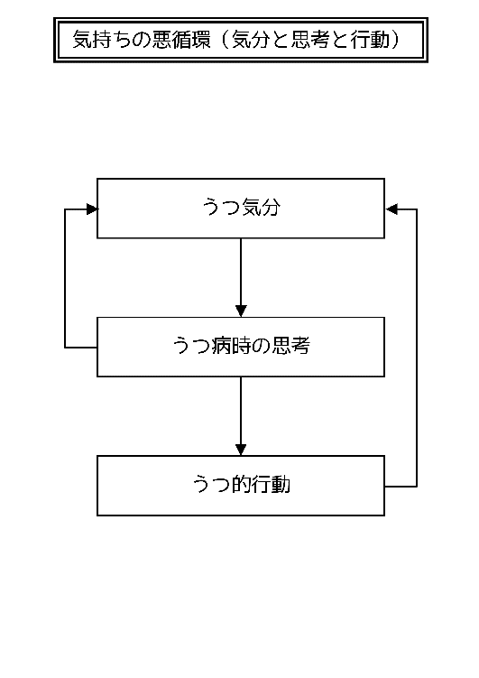
この考え方はシンプルだ。思考と行動が、うつ気分を助長している。思考の部分は少し補足する。
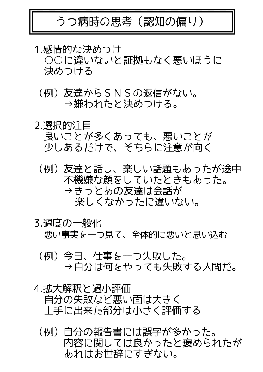
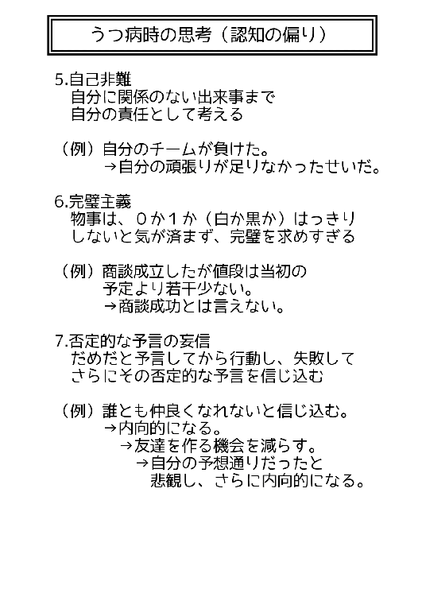
「こういった認知の偏りを治すためにも、認知行動療法は有効だよ。反証から導かれる、適応的思考がね」
かつての先生であれば、最後にそう締めくくったはすだ。
吾が輩も知識だけは学んできた。認知行動療法の本も数え切れないほど読んだ。適応的思考が上手にできない患者の指導も飽きるほどやった。
それなのに今、あろうことか自分自身の認知が偏り始めている。
この先、先生と同じように上手に生徒を教え導ける自信は全くないし、この身体を蝕む病を退ける方法も思いつかない。そんな状況で先生と同じ......いや、先生以上の成果を上げなければならない。とても可能とは思え......。
「あー、ダメだな、これは。ちょっとそこに座りたまえ」
「猫パンチだ。あまりにも腑抜けた顔だったからね」
......そうだったね。先生は、いつもそうだった。
先生はもういない。でも吾が輩の中には、いつも先生がいる。挫折しそうなとき、絶望に打ちひしがれたとき。あざとい可愛さを知っている小動物は、吾が輩を立ち上がらせる。何度でも。何回でも。
「今のパンチは痛かったよ。痛すぎて、もう下を向けないじゃないか......」
彼女の家の前で、ゆっくりと部屋の窓を見上げた。沈んだ気持ちを掬い、空に浮かばせるかのように。
そして自分に出来ることを......一つ一つで良い、やっていこうと誓うかのように。
吾が輩がまず行ったのは彼女に話しかけること。窓の外から何度も呼んだ。防音ガラスの存在がこれほど憎いと思ったのは生まれて初めてだった。
次に試したのは部屋に入ること。玄関側にまわって扉が開くのを待った。しかしその日の扉は、吾が輩の期待に応えてはくれなかった。
開かない扉を目で見つめ、周囲の様子を耳で伺い、一番重要なことを脳で考える。
彼女を救う最良の方法。一番良いのは入院だろう。
自傷の恐れや希死念慮がある場合、医師は患者を強制的に入院させることができる。それができれば十分な診療、看護体制と薬物治療で彼女を治せる。
ただし現実には困難かもしれない。彼女が病院、特に精神科を毛嫌いしていたことは、先生から聞いている。外来通院を行わせること自体、困難なのではなかろうか。
そして恐らく一番問題なのは、吾が輩の言葉が彼女に通じない可能性。これも先生が嘆いていた。彼女の言葉を聞き、ボディアクションで反応しても、賢い猫だと思われる程度だと。
「また......来るから」
結局、同じ言葉を残し、彼女の家から立ち去るだけ。そんな日々がしばらく続いた。
「先生......疲れている？」
ある日の夕暮れ、昔の自分からそう言われたとき、かつての先生も同じ悩みに苦しんでいたことを知る。
吾が輩にできることは、先生の行いをひたすら真似ること。彼女の家に通い続け、彼女と接触すること。機会があれば過去の自分とも会わせ、治療に協力してもらうこと。
......解っている。全く同じ道ではダメだ。結末がどうなったかは、吾が輩が一番よく知っている。どこかで変えなければならない。分岐路を作り、新しい道を行く必要がある。しかし、まだスタート地点にすら辿りついていない。
何日も何日も同じ道を行き来した。日に日に増すのは防音ガラスと開かない扉への恨み。しかし吾が輩は見つめ続けた。
ある夜。ついに、その恨みが晴らされる。開けてくれたのだ。彼女が窓を。
「どうしたの......迷子？」
蜘蛛の糸の話を思い出す。盗賊カンダタが地獄の底で糸を見つけたとき、その感動は計り知れなかった。
それを今、この身で感じている。
「お腹......空いているの？」
「にゃー」
「違う......ってこと？」
「にゃー」
「言葉がわかるの？ 賢い」
驚かさないよう静かに窓に飛び移り、彼女と会話する。やはりこちらからの言葉は一切伝わらない。ただ彼女の言葉に対しては、頷くか首を振るかしてイエスノーの意思表示をすることができる。
これだけで彼女を説得できないだろうか。その方法論を必死に考えた。
診察の第一歩は、患者または患者家族から情報を引き出すこと。そのために一番大事なのは、患者に信頼されること。
初対面でいきなり信頼されるのは難しい。しかしそこはプロ。笑顔、しぐさ、話す速度、相手への上手な問いかけと相手の話を傾聴するスキル。これで患者の内側の扉を開ける。
人の姿で言葉が通じるなら、いつもの診察のように振舞えば良い。しかし今は違う。猫の姿と言葉が通じないハードル。筆談すら叶わない肉球のついた手足で、内側の扉を開ける必要がある。
何か役に立つものはないか。吾が輩は部屋を見渡した。
思った以上に物が少ない。この部屋で彼女とコミュニケーションが取れるもの......それこそ薬袋でもあれば、それを指して服薬の話に持ち込むことも......。
「もしかして、あなたは......」
彼女の細い声が聞こえた。
「......死神？ 私を救いに来てくれたの？」
吾が輩の動きが止まる。完全に不意を突かれた。部屋に注意を向け過ぎていた。頷くことも首を振ることもできなかったのだ。慌てて思考を戻し、首を振ろうとしたとき、彼女は声をこぼした。
「お願い......私を殺してください」
真っ直ぐに吾が輩を見つめて。絶望に満ちた瞳で。......死が救いだと呟いた。
夜の静けさが辺りを包む。いつもなら遠くで聞こえる車の音も、道行く誰かの足音も、今は聞こえない。
何も......聞こえない。
時間が止まっているのではなかろうか。夜の世界ではない。灰色の世界に見える。全てが......。
（ニャー）
音が聞こえた。
何の音か分からない。しかし、それで我に返ることができた。吾が輩は力強く首を振る。
「どうして......」
そのまま彼女は、声も無く泣き崩れた。
......医師失格だ。
いつもの診察なら、どうしていただろうか。患者から、殺してほしいと頼まれたことがないわけではない。目の前で泣かれたこともある。その場合の返し方も知っている。
普段はちゃんとできていた。でも今、それができなかった。彼女に対してだけ、できなかった。
言葉が通じないからではない。彼女が吾が輩にとって、特別な存在であり過ぎたから。
死を望む彼女の姿は、吾が輩の心を大きく切り裂き、失った彼女の姿をそこに重ねさせる。思考を奪い、希望を奪う。
「同じ苦しみを知っている人こそ患者の本当の助けになれる。患者に寄り添い、共に歩くことができる」
蘇るあの言葉。
......わかっています。でも、先生ほど偉大な医師にはなれない。事実、膝をつき俯向く彼女を前に、身動き一つ起こすことも......。
（ニャー）
もう一度、音が聞こえた。
吾が輩の後から姿を現した一筋の光。月の明かりだ。
真っ暗だった世界を照らす。先ほどまで雲に隠れていたそれは、灰色の世界に色を映す。
「だからお願いだ。生きて、前を向いて、君が救える人を救ってほしい」
そうだ......吾が輩はまだ罪を償っていない。そのために生きてきた。そして今ここに、本当に救いたい人がいる。前を向くのは......今だ。
固まっていた身体に血が通うのを感じる。動かなかった足が動く。すぐさま窓から飛び降りると、膝を付く彼女の前に座った。前足をそっと彼女にかける。涙でぐしゃぐしゃになった顔で、彼女は吾が輩を見る。
「にゃー」
「......」
「にゃー」
「心配......してくれるのね」
ゆっくりと頷く。目は彼女から離さない。
「ありがとう......優しい子」
そう言って彼女は、少しだけ微笑んだ。
涙で潤んだ瞳は、女神のように美しく輝いていた。
それから吾が輩は、ずっと彼女の傍にいた。楽しいおしゃべりをするわけでも、一緒にダンスするわけでもない。ただ静かに彼女の傍にいた。
時折こちらを向く彼女の眼差しに、生気は感じられないように見えた。でも彼女と目が合うたび、吾が輩は小さな返事をした。この猫の姿で、今できる精一杯のこと。それがこの返事だと信じて。
どれくらいの時間が経ったのだろう。きっと草木も眠りにつくような時間なのだと思う。
「......おやすみ。私の死神さん」
少しだけ微笑んでそう言うと、彼女は夢の世界に旅立った。
吾が輩も、しばらくそのまま座っていたが、定期的な寝息をたて始めたのを確認すると、彼女の部屋を後にした。本当はずっと側に居たかったし、一緒に眠りたかった。しかし、それは身体が許してくれなかった。
家を出るとすぐに、我慢していた吐き気を全て出し切った。
吾が輩の身体の限界。それがこの夜だけで随分迫ってきたのを感じる。可能なら今すぐ倒れて永遠の眠りにつきたい。
「耐えなければ。あと何日......」
独り言を漏らし、途中で言葉を飲み込む。そして決意した。
「......何日でも耐えてやる。苦しみ続けてやる」
この苦しみが、本当に最後であろうから。
重い身体を引きずり、吾が輩は彼女の家を後にした。
翌日、一日だけ休みを取りたいと昔の自分に告げると、変な顔はされたが承諾は貰えた。
正直、身体が言うことをきかない。でも倒れることはできない。必要なのは栄養と休息。回復したら、すぐに彼女のところに行こう。
少しだけ眠り、何とか動けることを確認すると、吾が輩は彼女の家に向けて出発した。
夏はとうに終わり今は秋。なのに午後の太陽はそれを忘れ、この身体を暖めてくれる。それだけでも随分楽になる。
体力を温存するため、いくつか見つけた特別な近道を行く。
茂みの間。
人の入れない路地。
塀の上。
古ぼけた家の庭。
人の道より遥かに近い道。人の歩みは遠回りなのだ。
人間は賢い。先人の知恵を集め、文明を生み出し、歴史を紡いできた。積み重なったエビデンスは後から学ぶ者を助け、また新たなエビデンスを生む。誰かの築いた道を、また新たに誰かが進む。
繰り返す。ひたすら同じ道を繰り返す。
医学の道もそうだ。
実験や臨床研究から導かれた裏付け。それに基づき開発された新薬や治療法。救われた多くの患者と家族。
ただ猫であるが故に思う。
果たしてその道だけが、正しい道なのだろうか。他にも道があるのではなかろうか。人間の目には最短の道も、猫の目から見れば果てしなく遠回りの道でしかない。医学は人類の知の集大成。人間の目から見た全て。しかし、それが本当に全てなのだろうか。
茂みを抜けると彼女の家が見える。
吾が輩は猫の特権を生かし、少し開いた窓から、音もなく彼女の部屋に忍び込んだ。
通いだしてから今日で何日目だろう。初めのころは、少しだけ窓を開けて吾が輩を待っていてくれたが、それでは寒かろうとジェスチャーで説得し、今では窓は閉めてもらっている。
なお、家に行っても休ませることを優先し、負担になることは避けるようにした。もちろん彼女が言葉を発したときは、すぐさま相槌を返す。相変わらず吾が輩の言葉は届かないが、それでも会話をしている気分にはなれるたとえ会話の中に治療の糸口が無くとも、その行為自体が彼女の体調を良くする。それは顔色を毎日見ていればわかる。
さらに彼女を活性化させる方法は......。吾が輩は、自分の講義を思い出した。
「気分と思考と行動の悪循環。今回は行動の部分を説明するよ」
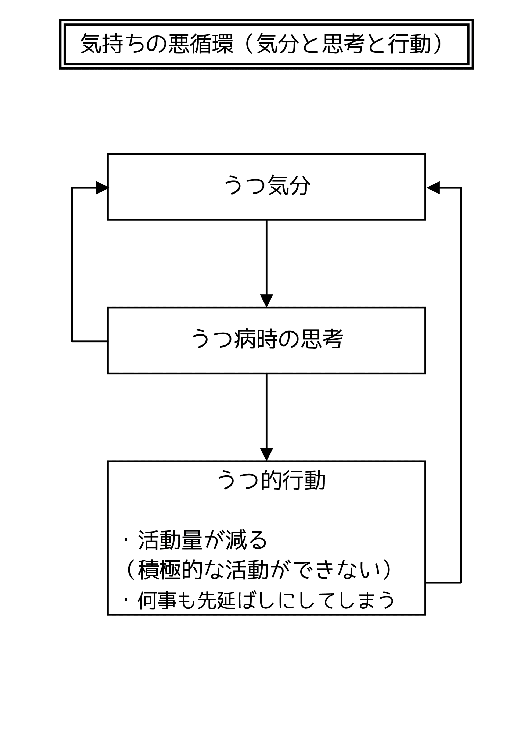
「思考の部分の説明でも話したとおり、過度の一般化や拡大解釈と過小評価により、楽しかったことも全然楽しくなかったと思ったり、実はできていても何もできなかったと感じたりしてしまう。結果、やる気も起きず活動量が減り、何事も先延ばしになる。だから、楽しかったこと、できたことを具体的に実感するためには、こういった行動活性化表が有効だ」
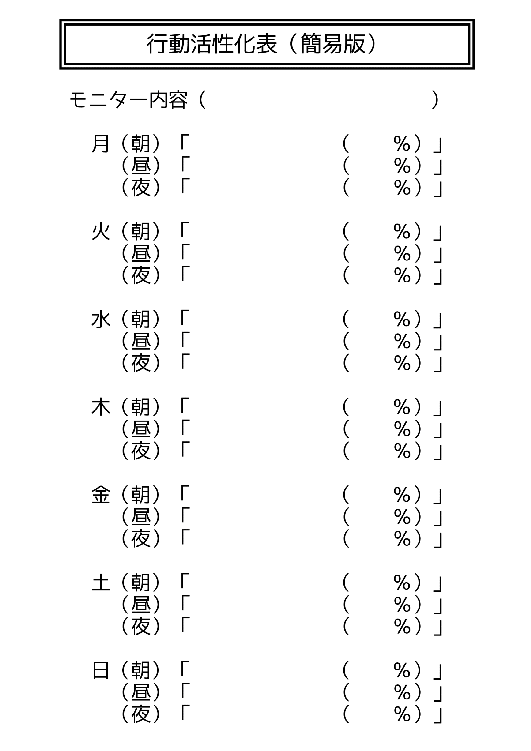
「まずモニターする気分を入れる。やる気とか、楽しさとか。次に、自分がその日行ったことで関係がありそうなものを一つ入れ、気分がどうだったか記載する」
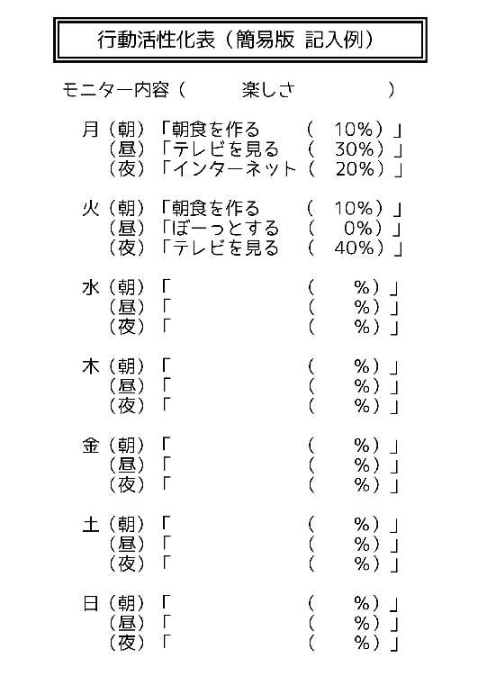
「一週間から一箇月ほど作り、後から見直すと、自分はどんな行動をすると気分が良いか、今後どんな活動を増やすと良いかが見えてくる。ちなみに今回は簡易版を紹介したけど、もっと書けそうなら詳細版というのもある。一部だけ紹介しよう」
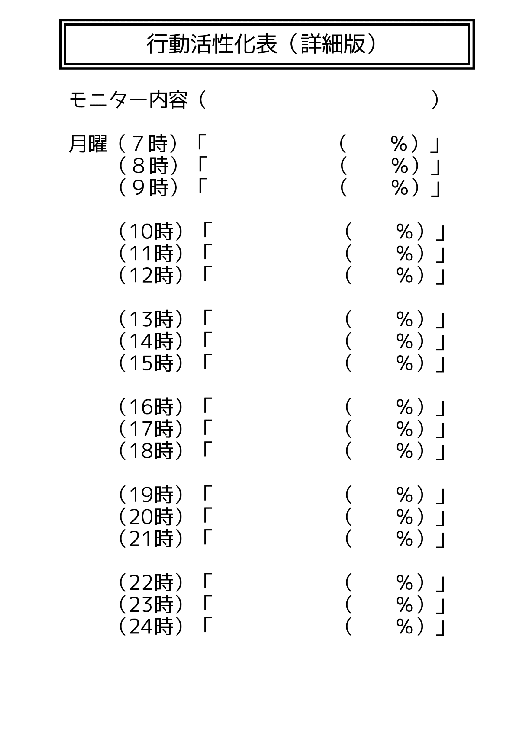
「簡易版では一日三箇所だった記載部分が１時間おきに書ける。ただし、書くのが疲れてしまうなら簡易版で良い。やる気が起きず活動量が減っているときに、さらに疲れてしまう難しい表を作る必要はない。あと行動活性化は少しだけ元気が出てきた時期に作るのが基本。あまりに落ちこんでいる時期は、栄養と休息を取ろう」
先生は吾が輩に行動活性化の話はしなかったが、吾が輩は自分の生徒にこれを説明した。
かつて先生に褒められた初日の出来事。あれは今でも印象に残っており、行動の基礎になっている。自分の気分が良くなる行為を把握することは大切。それを先生の具体的な行動から学んだ。だから吾が輩は、それを講義でも伝えた。
彼女の調子が良くなってきている今、さらに行動を活性化させたい。しかし言葉が通じない以上、彼女に行動活性化表は教えられないし......。
「どうしたの？ お腹すいた？ 何か......食べる？」
彼女から声をかけられた。吾が輩は首を振る。
申し出はありがたい。しかし体調的に、うかつに飲食して部屋で吐いてしまう可能性を考えると断るしかない。
「一緒だね......私も食欲ないから」
あまり良くない返答だ。せっかく回復の兆しが見えているのに、栄養が不足すれば再び心身の調子も悪くなる。
何か食べるよう誘導しようか。冷蔵庫でも指差せば、彼女にそれを伝えることもできる。
この部屋に冷蔵庫はない。他の場所か。よし、部屋の外に行こう。
吾が輩は部屋の出口の前に立ち、扉をあけるよう一声鳴いた。
「そこを開けて欲しいの？」
彼女はゆっくり立ち上がり、吾が輩に近づく。そのまま、吾が輩の頭を撫でながらこう言った。
「わかった。ちょっと待ってね。着替えるから」
一瞬理解できなかったが、すぐにその言葉の意味がわかる。先ほどの一声で、吾が輩が一緒に外出したがっているのだと思ったのだろう。
違う。止めるために一声......いや......待てよ。今日は良い天気。太陽も穏やかで暖かい。光を浴びることは良いことだ。散歩自体が行動活性化に繋がるかもしれない。このまま勘違いさせておこう。
少し悩んだあげく彼女が手にしたコートは、吾が輩の着ている毛皮とよく似ていた。
犬と散歩するのはよくある話。しかし、猫と散歩するのはどうだろう。首輪もリードもつけてはいないが、周りからは猫の散歩に見えるかもしれない。
以前、医学の道とは何かと考えて歩いた道を今、人と共に歩いている。もちろん、人が通れるルートで。
できるだけ人通りが少なく、彼女にストレスを与えない道。吾が輩はそんな道を選んだ。少し先を歩き、時折振り向き、彼女がいることを確認する。振り向くことはあっても声は掛けない。外で猫と話している姿を他人に見られないためにも。
目が合うたび彼女は少し微笑む。わかっているよ、という合図か。いや、これは幼子を見守る母親の眼差しか。年齢で言えば吾が輩のほうが遥かに年上なのだが......サイズ的に子供らしい。ま、子供でも友達でもペットでも何でも良い。こうして一緒に歩くことができるのだから。
彼女が見失わない程度の距離で。彼女に気を使わせないよう慎重に。それを保ち、静かに歩く。
恋人がいたことはないが、一緒に歩くときはスピードを気にしろと何かの本で読んだことがある。男女では歩幅が違うからだ。吾が輩はそれを思い出しながら歩いた。もっとも猫である以上、人の歩幅に合わせると少々急ぐ形になるのだが。
しばらく行くと少し大きめの公園が見えた。ここならのんびりできるし、人も少ないので猫と話していても大丈夫だろう。一匹と一人は、日の当たるベンチに腰を下ろした。
昨今の太陽が、季節を忘れていてくれたことに感謝する。おかげでこんなにも暖かい。
人の通れる道で来たので少々遠回りだったが、楽しい散歩だった。彼女も退屈ではなかったのだと思う。部屋の中で少し虚ろだった眼差しも、こころなしか穏やかになっている。
「ここに来たかったの？」
本当は冷蔵庫の前に行きたかっただけだが、その問いかけにはイエスを返した。
「......」
どうしたのだろう。吾が輩のイエスに対し、彼女は少し沈黙する。
「ここに......連れてきたかったのね」
彼女はそう言うと、また吾が輩の頭を撫でた。
「私......いつも暗い顔だからだよね。本当に賢い子」
しばらく撫でた後、手はそこから離れた。左右を結び、空に向けて大きく背伸びをする。うーんと小さな声を出しながら。
「こんなふうに外で空を見たの......久しぶり」
行き先が冷蔵庫じゃなくて良かった。改めてそう思う。
吾が輩も少し背伸びをすると、そのままベンチの上でくつろぐことにした。休めるときは少しでも休みたい。それが本音だ。
彼女をもう一度見上げてから、安心して前足の上に顎を乗せる。今日こうして外出できたことは、ちょっとした奇跡。なら奇跡を存分に楽しむのが良いに決まっている。
ぼんやりと景色を眺め、ゆっくりとした時間を楽しむ。自然と聞こえる鳥の声。あれは仲間に呼びかけているのか、それとも恋の歌か。鳥だけでなく今日は木々も機嫌が良い。夏ほどの陽気さはないが、緑と黄の葉たちが謹んだ華やかさを演出する。
彼女はどこを見つめているのだろう。視線の先を追ってみた。
木々の合間を通り過ぎる人。ベビーカーを押しながら歩く若い母親だ。時折立ち止まり、子供の様子を確認する。声を聞くことはできないが、恐らく子供に語りかけているのだろう。
「あれが普通のお母さん......」
独り言のように彼女は呟いた。そして吾が輩の視線に気づく。
「......ううん、なんでもないよ」
今聞いたことを忘れるよう、吾が輩の頭を撫でた。
「......」
吾が輩はかまわず彼女を見つめ続ける。
「死神さんには......嘘はつけない......か」
吾が輩の頭を解放し、そのまま自分の太ももの上に両手を載せる。こちらには向かず前を向き、わずかに前屈みになりながら彼女は続けた。
「うちは......普通のお母さんじゃなかったから」
ゆっくりしたペースで、彼女は自分のことを教えてくれた。
父親の顔は知らない。母親と二人暮らし。しかし、夜の商売を主とする母親にとって、彼女は邪魔なモノでしかなかった。
「アンタさえいなければ」
酔ったときに出る口癖は、いつも彼女を深く傷つけた。物理的な虐待も受けていたが、その口癖のほうがずっと痛かった。
しかしたった一人の肉親。母親から離れることは考えたことがない。だから必死に機嫌をとっていた。時折普通の扱いを受けられることが、彼女にとっての一番の幸せ。
男にもルーズだった母親は、頻繁に違う男を連れ込む。そのときは部屋に隠れているか、外に追い出されるかの二択。外に出るときは身体を冷やさぬよう、必ずマフラーを持って出かけた。特に雨の日は辛かった。できるだけ濡れない場所を探し、朝まで小さくなって過ごした。
家にも学校にも行かない、いや、行けない気分になる日も現れる。それを理由に、無理やり精神病院に入院させられそうになったこともあった。
母親としては、邪魔な娘が入院すれば自由になれると思ったらしい。しかし、入院費が予想以上に掛かると判った途端、手のひらを返し彼女を病院から引き離した。そして病院は酷い場所だと洗脳した。
中学に入る頃、状況はさらに悪化する。母親の男に乱暴を受けることもあった。しかし暫くすると彼女は救われる。この頃、仲の良い友達ができたのだ。
唯一の心の拠り所。その友達の必死の説得もあり、彼女は母元を離れ一人暮らしを始める。彼女が一人暮らしをしたいと言い出したとき母親はとても喜んだそうだ。
そのときの笑顔は今でも忘れない。母親が喜んでくれたこと。自分が邪魔なモノだったことを悲しむことより、その喜びのほうが大きい。この違和感は大人になってようやく理解できた。
安くて汚いアパートだったが、入居費用と家賃は母親が負担してくれた。もっとも半年もしないうちに家賃は出なくなり、彼女はアルバイトを始める。
その後、就職。あまり人間関係の良い職場ではないらしく苛められることもあったが、親友がいてくれたことで、何とか心の平穏は保たれていた。
しかし運命というのは残酷だ。親友は事故で顔に怪我を負ってしまう。それ以来、彼女を避けるようになり、彼女は拠り所を失う。
職場でのストレスもあり、うつ病が発症。職場からは休職を勧められ、診断書のために病院にも行ったが、幼少時の影響で通院時は毎回気分が悪くなり、現在は、通院も服薬も止めている。
「だからあの日......死神さんが来たとき、やっと終われる......って」
彼女は膝の上の両手を自分に引き寄せ、そのまま上体を屈め俯いた。しばらくの沈黙......そして再び身を起こし、吾が輩の頭の上に手を載せる。
「ごめんね......死神さんじゃないよね」
その後はあまり話していない。
一人と一匹は、秋も終わろうとする公園の景色を、ただ眺めていた。
決して寒くはない天気だった。でも吾が輩は、少しだけ彼女に頬を寄せて、午後の光を浴びていた。
昔の自分と彼女。容態は良くなってきている。ただそれに反し、吾が輩の容態は悪化の一途を辿っていた。
二人の家を頻繁に行き来するのは、決して楽なことではない。歩くこともままならず、そのまま倒れ込むこともある。帰る体力がないときのために、外で休める場所もいくつか見つけておき、限界を感じたときはそこで地に伏していた。
吾が輩の調子が悪いことを悟られたくない。そのためにも講義や訪問は不定期となり、我慢できないときは適度に現場放棄して寝込んでいた。
何日でも耐えてやる......その強い決意が、もっと強いものによって折られてしまう恐怖。それが日増しに大きくなる。だから焦り始めていたのかもしれない。
二人を......会わせよう。
吾が輩がそう決めたのは、昔の自分が彼女に会った日よりも、ずっと前だった。
「頼みがある。大事な頼みが」
「どうしたの？ 先生、なんか畏まっちゃって」
「実は君の他に、もう一人患者を抱えている。その患者に会ってほしい」
「......」
「他人と会いたくないという気持ちはわかる。ただ君にしか頼めない」
浮かない顔をする昔の自分に事情を説明した。彼女の病気のこと。簡単な生い立ちと、通院を嫌っていること。猫の言葉は通じないこと。
そしてその後、吾が輩は先生と違った台詞を口にした。
「彼女に通院を勧めてほしい」
「えっ、でも通院は嫌って......」
「言葉は通じないが、彼女からの信頼は得ているつもりだ。だから君が飼い主だと名乗り出て、吾が輩が心配していることを伝えれば、状況は変わるかもしれない」
「僕が先生の飼い主？」
「そうだよ。あと言葉についてだが......少しだけ分かることにして欲しい。彼女も吾が輩が人間の言葉を理解する猫だと気づいている。だから飼い主なら、もう少し通じ合っていても不思議ではない。なんとなく分かる、そんな表現で良い」
「なんとなく......」
「最近、うちの猫が出掛けることが多く、尋ねてみたら心配な人がいると。でも自分では治せないから人間の医者に見せてはどうかと......」
「先生だって医者じゃないか」
「その通り。しかし言葉の壁は大きい。特に精神科医にとっては。それに彼女は......」
今後、自殺企図する恐れがある。
そう言いかけ言葉を飲み込んだ。今ここで伝えるのは、得策ではない。プレッシャーが増し、会うことに否定的になる恐れがある。
「とにかくお願いだ」
必死に説得し、ようやく受け入れてもらえたのは、今日という日付も間もなく終ろうとするような時刻だった。
決行の朝。眠そうな昔の自分を叩き起こし、今日伝えるべき内容をもう一度復唱させる。とても役者にはなれそうもない口調だったが、むしろ真実味があって良いと思う。
場所は例の公園。時間を伝え、身だしなみをしっかり整えてから一人で来るよう頼んだ。
次は彼女。急いで彼女の家に向かい、体調を確認してから外に出たい旨を伝える。前に外出したときと同じ。扉の前で一声鳴くだけで彼女は察してくれた。
公園までの道。今日は陽があるにも関わらず妙に空気が冷たい。
吾が輩がまだ人だったなら、間違いなくコートの襟を立てていただろう。
振り返り、彼女が付いてきていることを確認する。目が合い彼女が少し微笑む。気温のせいか、顔色がいつもより白い。
彼女の調子も心配ではあるが、今日これから起こることのほうがもっと心配だ。彼は上手にやってくれるだろうか。彼女は吾が輩の願いを聞き入れてくれるだろうか。
道のりが長い。景色がいつもより険しく見える。
街路樹の葉は殆ど落ち、枝は細い身で冷たい風に耐えている。木の表情も......いやダメだ。吾が輩がこんな暗いことばかり考えていては。
もう一度彼女を見る。そして一声かけた。
「あと少し。大丈夫」
もちろん彼女に言葉は通じない。だからこれは、彼女に掛ける言葉であり、自分自身に掛ける言葉。でも彼女は、吾が輩の言葉に笑顔で答えてくれた。
公園に着くと吾が輩たちは、太陽の恩恵を受けられるベンチを探す。陽の光が当たる場所ならば、十分に暖をとれる。
準備は整った。あとは昔の自分が、吾が輩を探してこの場所に現れるのを待つだけだ。時間としてもちょうど良い。
予定では、誰かを捜すようにフラッと現れ、自分の飼い猫を見つけて側にいる彼女と挨拶。ここまではきっと大丈夫だろう。挨拶くらい簡単にできるはず。
そう思っていた矢先、いかにも怪しそうな男が、ふらふらヨロヨロと吾が輩たちの前に現れた。
「あ、せんせ......えっと違う、はじ、はじめまして」
怪しそうな男は、言うまでもなく昔の自分。
「......どちらさまでしょうか」
「え、あ、えっと......」
「にゃー！ （突然すみません、飼い猫を探していて、その黒い猫です......だ！）」
「あ、うん、突然すみま......猫探し......その黒い猫......僕の飼い猫です、はい」
なんということでしょう！
大根役者だとは思っていたが、まさかここまでとは。もう吾が輩が台詞を全部......。
「ごめんなさい！ あまり人と話したことがなくて緊張して......その......黒い猫、僕の猫です。ここ数日迷子で......証拠に右足の付け根のところに×印の傷があるはず」
思わず吾が輩は右足を上げて付け根を覗きこむ。
本当だ。確かに×印のような傷がある。知らなかった......。
彼女も併せて吾が輩の傷を覗きこみ、吾が輩と目が合う。彼女はくすっと笑い、小さな声で吾が輩に言った。
「死神さん......自分も知らなかったって顔に書いてある」
どうやら吾が輩は、目をまん丸にしていたらしい。
「うちの猫を預かっていただいて......ありがとうございます」
「あ、いえ、こちらこそ。しにが...えっと、この子、やっぱり迷子でしたか」
「はい。先生、賢いけどドジなところがあるから」
「センセー？ この子の名前？」
「あ、えっとそうです。へ、変な名前ですよね」
「ううん。可愛い名前だと思います」
予想以上に優秀だった役者を、相変わらず目を丸くしたままで吾が輩は眺めていた。
「あ、もうこんな時間ですね。今日は本当にありがとうございました」
「いえいえ、私も楽しかったです。それにセンセーもやっと飼い主に会えたわけだし」
「そうですね。先生、もう迷子になっちゃだめだぞ......と、言っても、また勝手にお邪魔するかもしれませんが」
「私は大丈夫ですよ」
「すみません。それでは......失礼します」
「センセー、またね」
こうして、初めての接触は終わった。残念なことに肝心の内容は話せずに終わっている。病気や病院の話は一切無し。しかし吾が輩は、途中で台詞を吹き込むことなく静観していた。
自分のことは自分が一番よくわかっている。一見普通に話していたが、間違いなく極度の緊張状態。きっと絞れば水滴が落ちるほど下着のシャツは汗びっしょりだろう。彼女と会話できただけで、仕事は立派にやり遂げたと言って良い。
「お疲れさま」
「先生......ごめん、教わった台詞、全然言えなかったよ......」
「大丈夫、焦ることはない。また機会があるさ。今日は帰ってゆっくり風呂に入り、ぐっすり寝よう」
「うん」
「......ありがとう」
「ん？ 先生、何か言った？」
「いや、何でもない。本当にお疲れさま。さ、行くよ」
「そうだね」
先にアパートに入る背中をもう一度見る。そして小さく一声かけた。
「......大丈夫」
夕日は沈み、空にはもう、いくつかの星が見え始めていた。
「今日は君に、アサーションという技術を教えたい」
「アサーション？」
「うん。簡単に言うと、自分の言いたいことや気持ちを相手に上手に伝える方法。これは、認知行動療法と一緒に説明されることが多い」
「えー、もっと早く教えてくれれば良かったのに」
「この方法は確かに有効だけど妄信しすぎてもいけないから。そもそも人間同士の気持ちというのは必ず通じ合えるとは限らない」
「ふぅん」
「とにかく説明しよう。相手に何かを伝えたいとき、極端に言えば二通りの言い方がある。一つは強い言い方。相手のことなんて考えず、とにかく強く自分の意見を押し付ける方法。そしてもう一つは弱い言い方。相手を全面的に尊重し、むしろ自分の意見を言わない方法だ」
「極端だなぁ」
「その通り。この二つの方法は、どちらもお勧めできない。だから皆、この二つの中間の言い方を無意識にしている。それがアサーティブな言い方だ」
「え？ じゃ、普段からできているってこと？」
「それもちょっと違う。ポイントは無意識。自動思考と同じで無意識だから、強い言い方、弱い言い方、どちら側に寄っているか明確には判らない」
「ということは、もしかして......」
「君の予想通りだよ。アサーティブな言い方とは、それを明確に意識した言い方。作り方は簡単。まず強い言い方を考える。次に弱い言い方を考える。そしてその二つを見ながら、中間の言い方を考えるだけ」
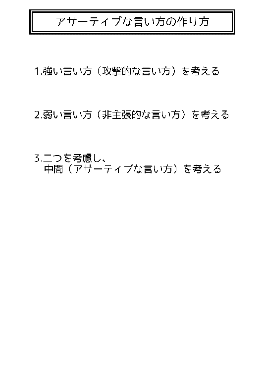
「具体例を挙げてみよう」
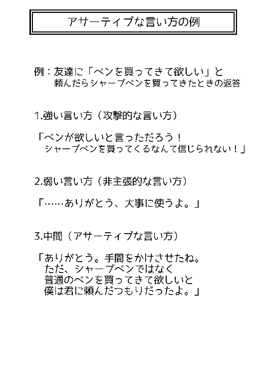
「これだけを見ると、当たり前の言い方だと思うかもしれない。でも実際はアサーティブな言い方ができないことがある。特にうつ病のときは、発言の前に次のような自動思考が働き、強い言い方寄りになったり、弱い言い方寄りになったりする」
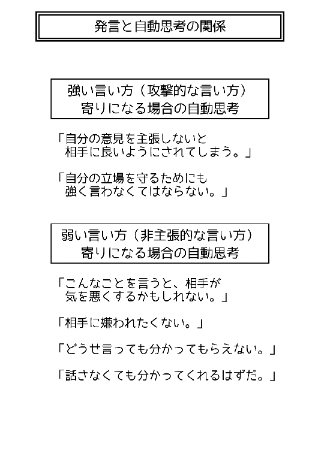
「強い言い方だと、気持ちは伝わっても相手とぶつかってしまい反感を買う。弱い言い方では自分の気持ちが十分伝わらず辛い気持ちになってしまう。だからアサーティブな言い方を明示的に作って解決する」
「これも、見えないものを見えるようにするってことか」
「そういうことだね。ちなみに作るときのポイントも教えよう」
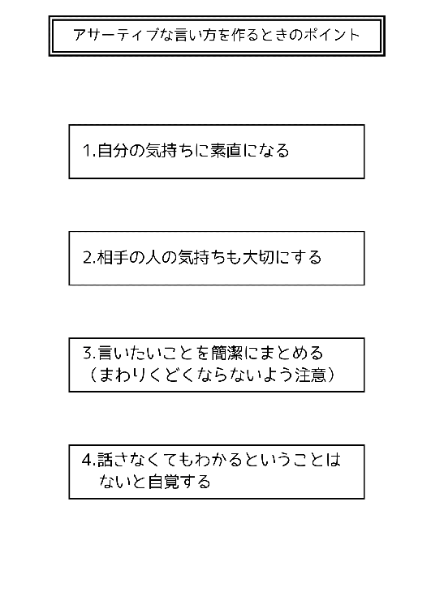
「自分の気持ちも、相手の気持ちも、両方バランスよくフォローできる言い方がベスト。アサーティブな言い方が完成したら、次はそれを上手く伝えられるよう練習してみよう。その台詞を伝える場面を浮かべながら、声に出して言ってみるのが一番良い」
「作って終わりじゃないの？」
「いくら豪華な料理でも、それを二階の窓から放り投げて客に提供したら、全て台無しだ。逆に質素な品でも、良い雰囲気の店で、オーナーが運んできて料理の説明をしてくれたら素敵に見えるとは思わないかい？」
「そりゃ......ね」
「ちょっと極端な例えだったけど、せっかく作った言い方だ、最後まで丁寧に相手に届けよう。ちなみに上手に気持ちを伝えるために、注意すべきポイントもあわせて紹介するよ」
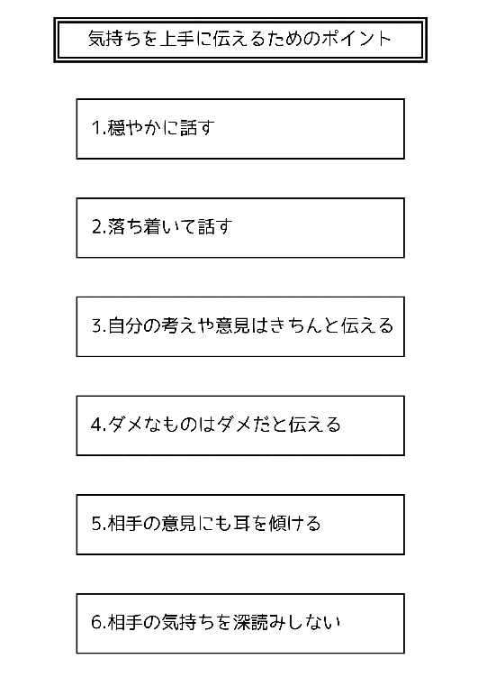
「なんだか、すごく難しいよ」
「人間は基本的に、言葉という不十分な方法でしかコミュニケーションできない。だから最初から上手く気持ちを伝えられる人なんていない。あのときはこう言えば良かったとか、言わなければ良かったとか......皆、後悔してばかりだ」
「後悔か......」
「でも、それで良い。今日失敗しても明日は上手くいくかもしれない。上手に伝えられることは重要じゃないよ。上手に伝えようと前向きに考え続けられること、これが重要」
「何度も何度もやっているうちに、できるようになるってことか。先生らしい考え方」
「そう......だね」
「先生？」
「......」
「どうしたの？」
「......何事もいつか、上手くいく日が必ず来るから大丈夫。生きている限りね」
「先生、大げさだなぁ」
「確かにちょっと大げさすぎた。さ、今日の講義はここまでだ。お疲れ様」
この日から吾が輩の生徒は、アサーションの練習も始めた。アサーションは医学部に入ってから学んだ内容であり、先生から教わった内容ではない。しかし運命の流れを変えようとしている吾が輩たちには必要であると判断し、これを教えた。
それから何日かに一度は二人を会わせている。お互いの心身に負担が掛からないような頻度で。しかし残念なことにアサーションをリアルタイムで実践できたことはない。不思議な黒い猫という共通の知り合いのおかげで会話は弾んでいるが、そこから病気とか病院とか、デリケートな話題へ会話を切替えるのは相当難しい。
「先生......ごめん、今日も言えなかった......」
「いや、良いよ。無理する必要はない」
大きな流れを変えるのは、簡単なことではないのかもしれない。
ただ、一向に変わろうとしない運命の流れとは裏腹に、時の流れは強引に事を進めている。刻一刻と吾が輩の身体を蝕み、日々の動作を重くする。
「そうそう。先生って本当に気まぐれで」
「意外。センセーってもっと真面目な子だと思って......センセー？」
「ん？ 先生、どうかした？」
「......すまない、急用を思い出した。少し席を外す。彼女にもそう伝えてほしい」
「え......あ、うん、わかった」
その返答を受け取ると、吾が輩は二人の目が届かないところまで移動した。
時の流れの強引さに心底嫌気がする。
同時に襲ってくる目眩と吐き気。先ほどまで平然を装っていたが、その無理も祟ったようだ。吾が輩は顔をしかめると、そのまま膝から崩れ落ちた。
髭の毛一本すら動かせないことを、少々恨めしく思いながら......。
――――賑やかな祭ばやしが聞こえる。
あまり騒々しい場所は、お互い好きじゃない。だから、少し見物しただけで、すぐに人気の少ないほうに移動した。僕たちは今、二人揃って綿菓子を食べている。
「......センセーって、いつも他人のことばかり考えていると思うの」
「確かにそうだね」
「小さな子なのに私たちより大人みたい」
「先生は大人だよ、僕らよりずっと」
「そうなの？ センセー何歳？」
「えっと......詳しくは知らなくて......」
「変なの」
そう言って彼女は笑った。
そうだ......この笑顔だ。
吾が輩が守りたかったのは。
そして......守れなかったのは。
だから......。
吾が輩はそこで目を開けた――――
自分の黒い身体を見て小さなため息をつく。気だるさは残っていたが、休んだおかげで何とか歩けそうだ。随分長い間席を外してしまった。二人は吾が輩の帰りを待っているのだろうか。もしそうなら、早く戻らねば。
鎖で縛られた重い足を踏み出した。それにしても随分と懐かしい夢。あれは、吾が輩にとって大切な日。自分の気持ちに気づいた、忘れもしない日。
夢の中で笑顔をくれた彼女と、今いる彼女。二人は同一人物。しかし、ふと思う。この時間軸にもう一人の自分がいるように、吾が輩が恋焦がれた彼女は、別にいるのではなかろうか。もしそうなら、吾が輩は何をしているのだろう。
救いたい。その想いだけで生きてきた。しかし、今の彼女を救えば、吾が輩が救えなかった彼女も救われるのだろうか。昔の自分を育て、彼女を励ましてきた。それで、吾が輩の望みは叶うのだろうか。
ただ一つ、間違いなく言えることもある。それは......ここにいる彼女も昔の自分も、心から救いたい人であるということ。
そう思ったとき、この気持ちが、もう単なる恋慕ではないことに気がついた。もっと大きなもの......かつて彼女が昼寝する先生の頭を撫でたとき。そのときの眼差しの奥にあったもの......。
「子を慈しむ母の気持ちか......」
吾が輩の望みは、今の二人が幸せになることだと思う。例え、かつての彼女の魂が別の所にあるとしても、叶えたい願いは変わらない。生きて、前を向いて、目の前にいる二人を救いたい。
薄暗い夕暮れの中、一人公園を歩きだす。二人が待っている場所まで。
吾が輩に残された時間はあと何日だろう。例えそれが先生よりもずっと短かったとしても......最後まで二人のために生きたい。
ようやく元の場所にたどり着く。しかし二人の姿は、もうそこには無かった......。
重い足を従え家に着くと、視界には開いている扉が入ってきた。
嫌な予感がする......。
玄関マットで自分の足を軽く拭き取ると、できるだけ静かに部屋に入った。低くうなる冷蔵庫の音が妙に背筋を寒くする。他に音のない部屋に入り、目を凝らす。
......いた。
薄暗い部屋の中、彼は床に座っている。吾が輩は胸騒ぎに恐れながら静かにゆっくりと尋ねた。
「具合でも悪いのかい？」
その問いに、彼は抑揚なく答える。
「言われた通りに言ったよ。でも上手くいかなかった」
彼は布団の中に潜り込む。沈黙が辺りを包む。
言葉を失い佇んだまま、吾が輩も動けない。気のきいた言葉を掛けることもできない。
酷く短い夜。
それが終り薄暗い明かりが差し込み始めても、二人の様子は変わらない。布団の中の彼と、呆然とする吾が輩。 何も話さない、話せない。息が......苦しい......。
吾が輩は逃げ出すように外に出た。
小雨。空から小さな雫たちが、いくつも落ち始める。冷たい水滴が深々と身体を冷やす。
こんな日に外を歩くのは好きじゃない。でも、歩かなければならない。
やがて彼女の家の前。外から見て部屋にいることは判る。しかし、窓とカーテンは堅く閉ざされたまま。それが開くことは無かった。
そうか......吾が輩は誤ったのか。
空を見上げても太陽はそこに無く、広がるのは暗い雲。降りしきる雨が止むことはない。ただ静かに全てを濡らす。吾が輩は彼女の家を後にした。
彼から話を聞いたのは深夜。
あの日、吾が輩が席を外した後、彼は意を決し病気の話を始めた。彼女に病院を勧めるところまで。
そして彼は、あまりにも冷たい彼女の目を見た。
......裏切られた。
そう目が語っていた。
彼だけではない、あの黒い猫にまで。理解してくれていたと思っていたのに。
それ以上の会話は続かなかった。二人はお互い、ひどく傷ついた。
「もう会いたくない」
最後に彼はそう言った。
とりかえしのつかないことをしてしまった。自らの判断を悔いた。
運命の流れを変えることはできず、それどころか悪化させた。彼と彼女は、吾が輩のときほど親密になってはいない。彼はまだ彼女と秋祭りにすら出向いていない。
何度か会う内、吾が輩は彼女に惹かれていった。あの夜がそれを明確に気づかせてくれた。彼女の気持ちがどうだったのかまでは知る術がない。しかしあの夜がなければ、今の吾が輩は存在しない。
その後、吾が輩は彼の精神フォローにまわった。自分の非を心から侘び、またこれ以上、彼女のことを気にしないよう告げた。ただ、彼が笑顔を見せることは無くなった。
彼女の家にも毎日通った。窓の外で待った。ずっと......。
しかし祈りは届かない。彼女がその窓を......いや、カーテンすら開けてくれることはなかった。
もどかしいまま数日が過ぎる。何日も同じことを繰り返す。次第に彼女の家に行くことも体力的にままならなくなる。
彼女を秋祭りに誘ってくれないか？
今はもう、その言葉をかけることもできない。かけたところで彼も彼女も動かない。
そしてついに祭りの日。彼はずっと布団に入ったまま......それは、ここにいる彼が、吾が輩と違う道に踏み込んでしまった証でもある。
彼は......もう彼女に想いを寄せることはない。
「吾が輩は医師失格だ。君に重い十字架を背負わせた。本当にすまない」
「......」
「君たちと過ごした時間......いや、今はゆっくり休んでほしい。彼女のことも忘れて......。ただ、吾が輩が教えたことは忘れないでほしい。一つでも覚えていれば、君は前よりも良く生きられる......」
生きられる......。
その言葉を静かに噛み締めた。自分のことは自分が一番わかる。身体はとうにリミットを越えている。秋祭りの日までと僅かな希望を糧に生きてきたが、その希望も潰えた。吾が輩は明日にでも動かなくなるだろう。
彼は大丈夫だ。彼はもう吾が輩ではない。彼女への想いはない。忘れることも難しくはない。そしてこの病状であれば、ストレスを避け、休んでいれば治る。
「吾が輩は......もう行かなければならない」
「......」
先生の最後の台詞が頭を過ぎる。しかし、それを彼に言う必要はない。むしろ、この先の彼女と関わらないほうが幸せになれる。
だから......。
もう......。
「すまない。本当にすまない。でも君しかいないから......。人を治すのは医師じゃない。医療技術じゃない。同じ苦しみを知っている人こそ患者の本当の助けになれる。患者に寄り添い、共に歩くことができる。だからお願いだ。生きて、前を向いて、君が救える人を救ってほしい」
「......せん......せい？」
「......すまない」
吾が輩はそう言って、彼の家を飛び出した。
何を言っている？
これ以上、なぜ彼を苦しめる？
彼を救いたい？
彼女を救いたい？
嘘じゃないか。
結局救いたかったのは自分じゃないか！
吾が輩は、吾が輩のために......吾が輩を救うためだけに行動している。
吾が輩は......最低だ！
嵐のように走った。猫になって初めて走ったあの日のように。何にも構わず、ひたすら走った。全身の痛みに身体がバラバラになりそうでも、構わず走った。
目の前が徐々に白くなる。脳に血液が流れていない。それなのに走った。
大きな音がする。鋭い痛みに襲われる。
......そうか......もう真っ直ぐ走ることすらできなかったのか。
吾が輩は勢いそのままで、路地の隅に転がるように吹っ飛んだ。
動かない身体で空を見上げる。
......これで......終わるのか。
そう思った。
......なら......永遠の眠りにつきたい。
そう思った。
しかし同時に、もう一つの想いが脳裏をよぎる。そして口から自然に言葉が漏れた。
「......苦しみ続けてやる」
弱りきった足と腰に全身の力を込めた。激しい痛みを無視して起き上がる。そして、ゆっくりと彼女の家に向かう。
吾が輩は彼女を死なせ、今の彼を苦しめ、そしてまた今の彼女を死なせようとしている。愛する人たちを苦しめ、何度も殺す。彼を救いたい、彼女を救いたい、そんな嘘を盾に自分を救うためだけに動き、そして失敗した。
吾が輩の罪は誰よりも重い。
足を引きずりながら一歩、また一歩と彼女の家に歩を進める。
......もはや救われることなど、望んではいない。
彼女の家の前に立つ。彼女の窓が見える場所に立つ。
......だから苦しみたい。せめて苦しみ続けたい。
「にゃー......」
吾が輩は鳴いた。
「にゃー......」
何度も。
「にゃー......」
まともに発声できたのは最初の数回くらいだろうか。
「ゃー......」
しかし吾が輩は鳴いた。喉から息を吐き出し微かに空気を震わせる。
「ゃー......」
もはや、それは鳴き声とは言えない。
「ゃ......」
立つことも既にできなくなった。
「ゃ......」
しかし吾が輩は鳴いた。
「ゃ......」
首だけを上げ、空を見上げ、鳴いた。
「ゃ......」
雨が降り出す。
吾が輩の過ちが明らかになった日と同じ小雨。それでも上を向き、できるだけ口を開け、声にならない声が少しでも届くように鳴く。
「ゃ......」
雨が顔に当たる、口の中にも入る。
「ゃ......」
世界が白い。降りしきる雨が当たる感覚も無くなった。
「ゃ......」
それでも鳴いた。
「......」
泣いた。
「......」
泣き続けた。
「......」
もうだめなのか......。
「......」
なくことすら......。
「......」
苦しみ続けることすら......。
「......」
吾が輩には許され......。
「先生っ！」
「......」
「もうやめて先生！ 僕が悪い。全部僕のせいだ......」
「......」
「あの日以来、先生はここに通っているのに、それなのに僕は......僕は......」
「......」
「ちがう！ 私のせい！」
「えっ」
「......」
「ごめんなさい！ 本当にごめんなさい！ 私知っていた、見ていたの！ あの日から、二人が何度も来てくれていたこと！」
「......」
「センセーの後ろで隠れて見てくれていたこと！ 知っていた！ 知っていたのに私......私......ごめんなさい......二人は本当に私を心配してくれて......それなのに私......」
黒くて細くて小さなモノを囲み、大切な人たちが涙を流している。
傘もささないで......二人とも風邪を引いてしまうよ。彼女にいたっては、靴すら履いていないじゃないか。
「...」
ああ......二人に声が届かない。これだから猫は困る。肝心なときに声も出ないのだから。
「先生？！」
聞こえているよ。そんなに大きな声を出さなくても。
「センセー？！」
大丈夫。吾が輩はもう大丈夫だ。
「先生ーっ！！！」
吾が輩の意識は、そこで途絶えた。
夢から覚めたとき。今までが夢だったのか、それとも現実だったのか、迷うことはないだろうか。
吾が輩の命は尽きた。
それにしても最後に二人の顔が見られて良かった。あの二人は大丈夫。きっと大丈夫だ。
何故だろう......。
そう思った。
やっと眠れる......。
そう思った。
しかし一つは誤りだったようだ。あと少しだけ時間が貰えたらしい。いや、最後の仕事というべきか。
吾が輩は年老いた老人の姿で、黒い上着を着て肌寒い道端に立っていた。
目の前には幸せそうな二人の姿。それを見て、やるべきことを確信する。
二人のうち男性のほうが薄手のコートの襟を立てようとした。だから吾が輩は声を掛けた。
「先生」
振り返る二人。二人の薬指には銀色に輝く指輪。それを見て吾が輩は満面の笑みを浮かべた。
「お久しぶりです先生。その節は本当にお世話になりました」
「えっと......申し訳ありません。どなたか人違いをされていませんか。僕たちはドクターではありません。二人とも看護師です。本当はドクターになりたかったけど......」
「いやいや、これは失礼いたしました。でもあなた方に救われたのは間違いありません」
その言葉に二人は少し不思議そうな顔をする。
「覚えていなくても無理はありません。でも事実です。本当にありがとう」
「いえ......」
「それと、今日は一つだけお願いがあります。どうか今日は......今日だけは、どこも立ち寄らず、日が変わる前にご帰宅頂けないでしょうか」
「今日は二人で食事をする約束で......」
「本当に申し訳ない。ただ、この歳になると勘が働くところがありまして......この年寄りの一生に一度、最後のお願いとして聞いて頂けないでしょうか」
しばらく考える二人。
冷たい風は吹かない。道端の落ち葉も、アスファルトの上を転がり通ることはしない。
静寂の中、口を開いたのは彼女のほうだった。
「......わかりました」
「えっ」
「大丈夫、食事はまたいつでも行けるから」
「ま......確かにそうか。わかりました。今日は真っ直ぐ帰ります」
「お二人は本当にお優しい。こんな老人の戯言に付き合って頂いて」
「いえいえ」
「それにしても今日は寒いですな。老体には堪えます。そろそろ吾が輩は......失礼させて頂くとしましょう」
二人に背を向け、吾が輩は静かに歩き出す。
これで良い。これで全部終わった。さぁ、もう思い残すことはない。
夜の闇に姿が溶けゆくのを感じる。やっと終わるのだ。
「先生......」
後ろで聞こえる声。吾が輩を呼ぶ声が聞こえる。
「先生......ですよね......」
振り返っても、吾が輩にはボンヤリとしか見えない。
でもわかる。
目に一杯の涙をため、吾が輩を見送ってくれる二人の姿が。
「僕たちは先生に救われました。本当に......」
二人の口が開く。去りゆく吾が輩に届けようとしてくれている。最後の贈り物を。
「本当に......ありがとうございました」
薄れゆく意識と、流れゆく景色の中、吾が輩も贈り物を返そう。最愛の二人に。
......お礼を言うのは吾が輩だよ。
......救われたのは吾が輩のほうだから。
......ありがとう。
......。
最後の言葉は二人に届いただろうか。
いや大丈夫。きっと大丈夫だ。そう信じ、吾が輩はゆっくりと瞼を閉じた。
僕の仕事は終わった。
苦しみから解放され、ようやく安らかな眠りにつける。
光り輝く道が見えた。
目の前には先生と彼女がいる。随分待たせてしまったようだ。
「君は名医だよ。吾輩よりずっと」
先生はそう言ってくれた。
僕は照れながら先生を見、そして彼女を見た。
彼女はそこで、もう一度、あの笑顔を見せてくれた。
大好きだった、あの笑顔を。
夢から覚めたとき。
今までが夢だったのか、それとも現実だったのか。
僕はいつも迷っていた。
でも......もう迷うことはない。
古い友人と、大切な人と。
今から僕は、光り輝く道を歩いてゆくのだから。